1. Inquadramento della Matematica Discreta e il Concetto Fondamentale di Insieme
Natura della Matematica Discreta e Ambiti Applicativi
La matematica discreta si caratterizza come quel ramo della matematica che studia strutture finite o numerabili e non utilizza in alcun modo le nozioni di limite e di continuità, quali derivate e studi di funzione, che appartengono invece al campo dell'analisi matematica. Il suo focus principale riguarda la matematica del "contare" e lo studio dei numeri interi e delle loro strutture algebriche.
Questa disciplina costituisce la colonna portante della Computer Science. I calcolatori elettronici, per quanto complessi, sono macchine a stati finiti in grado di elaborare e memorizzare soltanto una quantità finita di informazioni; non possono rappresentare direttamente entità continue o numeri irrazionali (come π) se non attraverso approssimazioni discrete. Inoltre, la matematica discreta fornisce gli strumenti concettuali indispensabili per la crittografia moderna. Dalla decifrazione della macchina Enigma durante la Seconda Guerra Mondiale fino ai moderni algoritmi a chiave pubblica come RSA, la protezione e la riservatezza dei dati digitali si basano interamente su strutture algebriche e aritmetiche discrete.
Definizione di Insieme e il Criterio di Oggettività
Negli ultimi 120 anni la teoria degli insiemi (nella sua formulazione intuitiva o "ingenua") è diventata il linguaggio universale su cui viene fondata e scritta tutta la matematica.
Un insieme viene definito formalmente come una collezione ben determinata di oggetti distinti, detti elementi dell'insieme. Il requisito cardine affinché una collezione sia un insieme matematico è il criterio di oggettività: l'appartenenza di un generico oggetto all'insieme deve essere definita tramite una proprietà oggettiva, verificabile e del tutto priva di ambiguità logica o valutazioni personali.
In parole povere: un insieme è un sacchetto di oggetti in cui per ogni oggetto si può dire senza dubbi se c'è dentro oppure no. Gli oggetti dentro si chiamano elementi e non si contano due volte. «Gli studenti presenti in aula» è un insieme; «gli attori bravi» no, perché «bravo» è un'opinione.
Esempi validi (oggettivi): "L'insieme dei numeri naturali minori di 10", "i cittadini italiani" o "l'insieme degli studenti presenti in aula" sono insiemi matematicamente ben definiti.
Esempi non validi (soggettivi): espressioni come "l'insieme degli attori bravi" o "l'insieme dei numeri interessanti" non costituiscono insiemi matematici, poiché "bravo" o "interessante" dipendono da giudizi soggettivi ed estemporanei (come ricordava il matematico Hardy citando l'aneddoto sul numero 1729 di Ramanujan).
Proprietà Essenziali degli Insiemi
Un insieme matematico risponde a due regole strutturali imprescindibili:
Unicità degli elementi: un insieme non ammette elementi ripetuti o indistinguibili; ciascun elemento vi appartiene una sola volta. Di conseguenza, l'insieme descritto come {a, a, b, c} coincide a tutti gli effetti con {a, b, c}.
Irrilevanza dell'ordine: l'ordine con cui vengono elencati o scritti gli elementi non altera in alcun modo l'identità dell'insieme. Ad esempio, {a, b, c} e {b, a, c} rappresentano esattamente lo stesso insieme.
Modalità di Rappresentazione, Notazioni e Diagrammi di Venn
Per definire operativamente un insieme si utilizzano convenzionalmente due approcci principali:
Rappresentazione Estensionale (per elencazione): consiste nel listare esplicitamente tutti gli elementi contenuti tra parentesi graffe, come A = {a, b, c, 1, 6, 8}. È il metodo più diretto, ma risulta praticabile solo per insiemi finiti di piccole dimensioni.
In parole povere: descrivere un insieme per elencazione significa scrivere uno per uno tutti i suoi elementi tra graffe, come l'elenco della spesa. Va bene solo se sono pochi. Esempio: {2, 4, 6}.
Rappresentazione Intensionale (per proprietà / comprensione): specifica la proprietà o condizione logica P(x) che tutti e soli gli elementi devono soddisfare all'interno di un insieme universo di riferimento U. La notazione formale assume la forma X = {x ∈ U | P(x)}. Ad esempio, per definire i numeri interi da 1 a 1 miliardo senza doverli elencare tutti, si scrive B = {n ∈ ℕ | 1 ≤ n ≤ 109}.
In parole povere: descrivere un insieme per proprietà significa non elencare nulla, ma dare la regola che decide chi entra. Si dice «tutti gli x dell'universo che rispettano questa condizione». Esempio: «i numeri naturali pari» al posto di 0, 2, 4, 6, ... che non finirebbe mai.
Per la notazione simbolica, gli insiemi si indicano di norma con lettere latine maiuscole (A, B, X) e gli elementi con lettere minuscole o numeri.
Il simbolo ∈ indica la relazione di appartenenza (x ∈ A si legge "x appartiene ad A").
Il simbolo ∉ indica la non appartenenza (x ∉ A), ottenuta sbarrando il simbolo fondamentale.
Dal punto di vista grafico, gli insiemi vengono visualizzati tramite i Diagrammi di Venn. L'insieme è rappresentato da un ovale o regione chiusa del piano, gli elementi interni sono raffigurati come punti situati dentro la regione, mentre gli oggetti che non vi appartengono sono collocati all'esterno.
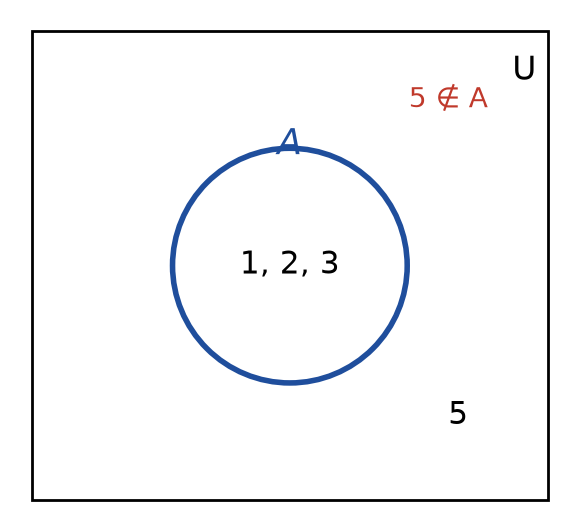
Un insieme come diagramma di Venn: 1, 2, 3 ∈ A e 5 ∉ A.
2. Relazioni tra Insiemi, Insieme Vuoto e Gerarchia tra Appartenenza e Inclusione
L'Insieme Vuoto e la Cardinalità
Nella teoria degli insiemi gioca un ruolo centrale l'insieme vuoto, definito come l'unico insieme privo di elementi. Viene rappresentato simbolicamente con il segno ∅ oppure con la coppia di graffe vuote {}. Sebbene possa sembrare un concetto astratto o paradossale, l'insieme vuoto è indispensabile per formalizzare operazioni come l'intersezione tra insiemi disgiunti o per definire le basi dell'aritmetica.
In parole povere: l'insieme vuoto è la scatola senza niente dentro. Ne esiste una sola, perché due scatole vuote sono uguali: non c'è nulla che le distingua. Attenzione a non confonderlo con {∅}, che è una scatola con dentro una scatola vuota.
La cardinalità di un insieme A, indicata con la notazione |A| (o card(A)), indica il numero totale dei suoi elementi distinti.
In parole povere: la cardinalità è semplicemente «quanti elementi ci sono», contati una volta sola ciascuno. Esempio: {a, b, c} ha cardinalità 3, l'insieme vuoto ha cardinalità 0.
Per l'insieme vuoto si ha per definizione |∅| = 0.
Per insiemi finiti di piccole dimensioni, la cardinalità coincide con il conteggio pratico degli elementi (ad esempio, se A = {a, b, c, 1, 6, 8}, allora |A| = 6).
Nel caso di insiemi con infiniti elementi (come l'insieme dei numeri naturali ℕ), si scrive |A| = ∞.
La Relazione di Sottoinsieme e le sue Proprietà
Un insieme S si dice sottoinsieme di un insieme T (indicato con S ⊆ T) se ogni elemento appartenente a S appartiene anche a T.
In linguaggio logico formale, mediante il quantificatore universale ∀ ("per ogni") e l'implicazione ⟹, la relazione si scrive:
S ⊆ T ⟺ ∀ x ∈ S, x ∈ T
In parole povere: S è sottoinsieme di T quando S sta tutto dentro T, cioè nessun elemento di S rimane fuori da T. Come «gli studenti di Informatica» rispetto a «gli studenti dell'università». Per vedere se NON è vero basta trovare un solo elemento di S che non sta in T.
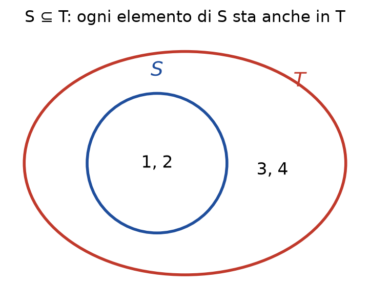
S ⊆ T: la regione di S sta dentro quella di T.
Sottigliezza notazionale (⊆ vs ⊂): Il simbolo ⊆ indica l'inclusione debole e ammette la possibilità che S sia uguale a T, analogo al segno di minore o uguale (≤) in aritmetica. Se si vuole specificare che S è un sottoinsieme proprio (cioè contenuto in T ma non coincidente con esso, esistendo almeno un elemento di T non presente in S), si usa il simbolo di inclusione stretta ⊂ o ⊊.
Attenzione ai testi. Nel libro di testo e negli esercizi d'esame il simbolo ⊂ è usato con il significato di ⊆, cioè inclusione in senso lato, e la sua negazione ⊄ vuol dire semplicemente «non è sottoinsieme»; per esempio vi si trova «∅ ⊂ A» per ogni insieme A. In questi riassunti, invece, ⊂ indica l'inclusione stretta, come nella catena ℕ ⊂ ℤ ⊂ ℚ ⊂ ℝ. Davanti a un vero/falso conviene controllare sempre quale convenzione si sta usando: se ⊂ è letto come ⊆, l'affermazione «A ⊂ A» è vera.
Il quantificatore esistenziale e la negazione dei quantificatori
Accanto al quantificatore universale ∀ («per ogni») compare spesso il quantificatore esistenziale ∃ («esiste»): scrivere ∃ x ∈ A tale che P(x) significa che almeno un elemento di A soddisfa la proprietà P. Per dimostrare un'affermazione con ∃ basta esibire un elemento che la verifica; per smentire un'affermazione con ∀ basta esibire un controesempio.
In parole povere: «esiste» vuol dire che ne basta almeno uno. Per provare che una frase con «esiste» è vera ti serve un esempio; per provare che una frase con «per ogni» è vera non basta un esempio, serve un ragionamento che valga per tutti. Per smentire un «per ogni» basta un solo controesempio.
La negazione scambia i due quantificatori: ¬(∀ x ∈ A, P(x)) equivale a ∃ x ∈ A tale che ¬P(x), e ¬(∃ x ∈ A tale che P(x)) equivale a ∀ x ∈ A, ¬P(x). Per esempio, «A non è sottoinsieme di B» si scrive ∃ x ∈ A tale che x ∉ B: basta un elemento di A che non sta in B.
Dalla definizione discendono alcune proprietà generali fondamentali:
Riflessività: Ogni insieme è sottoinsieme di se stesso (A ⊆ A), poiché qualsiasi elemento di A appartiene banalmente ad A.
Universalità dell'insieme vuoto: L'insieme vuoto è sottoinsieme di qualunque insieme (∅ ⊆ A), in quanto non contiene alcun elemento che possa violare la condizione di inclusione.
Relazione tra cardinalità: Se S ⊆ T, la cardinalità di S non può mai superare quella di T, ovvero |S| ≤ |T|.
Sottoinsiemi Banali e Propri: Per un generico insieme non vuoto A, l'insieme vuoto ∅ e l'insieme A stesso sono detti sottoinsiemi banali; un sottoinsieme S ⊆ A con S ≠ A è detto proprio (come definito sopra).
In parole povere: ogni insieme ha sempre due sottoinsiemi «ovvi», quello vuoto e sé stesso, e si chiamano banali. Un sottoinsieme proprio è un pezzo vero e proprio, cioè dentro all'insieme ma diverso dall'insieme intero. Esempio: {1} è un sottoinsieme proprio di {1, 2}.
Uguaglianza tra Insiemi e il Principio della Doppia Inclusione
Due insiemi A e B sono uguali (A = B) se e solo se sono composti esattamente dagli stessi elementi.
In parole povere: due insiemi sono lo stesso insieme quando hanno esattamente gli stessi elementi, né uno di più né uno di meno. Non contano ordine e ripetizioni: {1, 2} e {2, 1, 1} sono uguali.
In sede di dimostrazione matematica o nell'istruire un algoritmo informatico, verificare direttamente l'uguaglianza può essere complesso. Operativamente si applica quindi il principio della doppia inclusione:
A = B ⟺ (A ⊆ B ∧ B ⊆ A)
La dimostrazione si articola sempre in due fasi distinte:
Si dimostra la prima inclusione (A ⊆ B): si prende un generico elemento x ∈ A e si deduce logicamente che x ∈ B.
Si dimostra la seconda inclusione (B ⊆ A): si prende un generico elemento y ∈ B e si deduce che y ∈ A. Una volta verificate entrambe le condizioni, si conclude con certezza che A = B.
Il Concetto di "Scatole Cinesi" e Gerarchia Logica
Questo fenomeno introduce una rigida gerarchia di livelli logici: gli elementi di un insieme che è a sua volta elemento di B (come A in B = {A, 3}) non sono automaticamente elementi di B: A ∈ B non implica A ⊆ B. Aggiungere una parentesi graffa altera completamente la natura dell'oggetto matematico: la notazione a indica un elemento semplice, mentre {a} indica l'insieme che contiene quell'elemento.
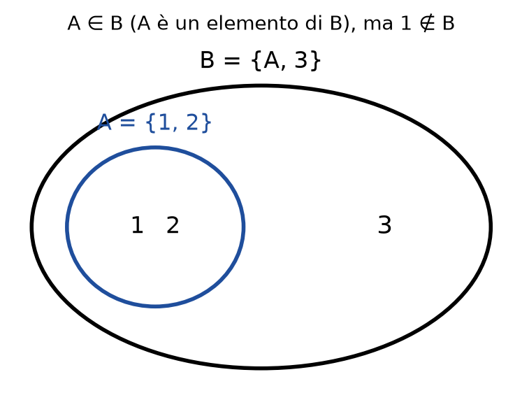
Le scatole cinesi: A è un elemento di B, ma gli elementi di A non lo sono di B.
3. Operazioni Insiemistiche Algebriche e Prodotto Cartesiano
Le Operazioni Insiemistiche Fondamentali: Intersezione e Unione
Dopo aver analizzato gli insiemi singolarmente e le loro relazioni contenitive, la teoria degli insiemi introduce le operazioni algebriche per far interagire più insiemi tra loro. In matematica, un'operazione è una ricetta astratta che prende due oggetti di una determinata natura (in questo caso due insiemi) e ne produce un terzo appartenente al medesimo ambito.
A partire da due insiemi X e Y appartenenti allo stesso universo, si definiscono due operazioni algebriche fondamentali:
Intersezione (X ∩ Y): È l'insieme costituito da tutti e soli gli elementi che appartengono sia a X sia a Y (elementi comuni ad entrambi):
X ∩ Y = {x | x ∈ X ∧ x ∈ Y}
In parole povere: l'intersezione tiene solo ciò che le due scatole hanno in comune, cioè gli elementi che stanno in X e anche in Y. Esempio: tra {1, 2, 3} e {2, 3, 4} resta {2, 3}.
Se due insiemi non possiedono alcun elemento in comune (X ∩ Y = ∅), si dicono disgiunti.
In parole povere: due insiemi sono disgiunti quando non hanno niente in comune, come i numeri pari e i numeri dispari.
Unione (X ∪ Y): È l'insieme ottenuto raggruppando tutti gli elementi che appartengono a X, a Y oppure a entrambi:
X ∪ Y = {x | x ∈ X ∨ x ∈ Y}
In parole povere: l'unione mette tutto insieme in un'unica scatola: ci finisce chi sta in X, in Y o in tutti e due, senza doppioni. Esempio: {1, 2} unito a {2, 3} dà {1, 2, 3}.
Graficamente, nei Diagrammi di Venn, l'intersezione corrisponde alla sola regione sovrapposta centrale condivisa dai due ovali, mentre l'unione corrisponde all'intera superficie ricoperta da entrambi gli ovali presi insieme.
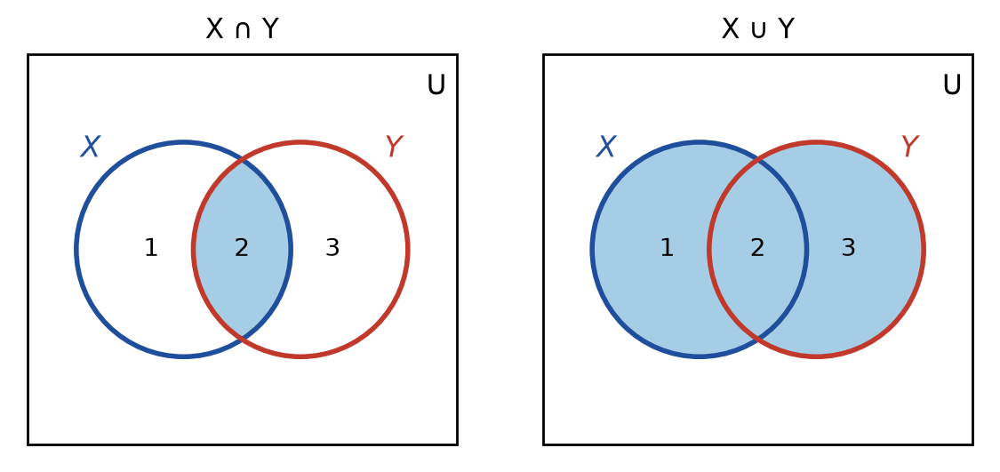
Intersezione e unione di due insiemi X e Y (regioni in azzurro).
Proprietà Algebriche delle Operazioni e Dimostrazioni Rigorose
Le operazioni insiemistiche di unione e intersezione soddisfano proprietà algebriche fondamentali, in modo analogo alle operazioni di addizione e moltiplicazione sui numeri interi:
Proprietà Commutativa: L'ordine con cui vengono presi i due insiemi è del tutto irrilevante:
X ∩ Y = Y ∩ X e X ∪ Y = Y ∪ X
Proprietà Associativa: Quando si operano tre insiemi, il raggruppamento dei termini non altera il risultato finale:
(X ∩ Y) ∩ Z = X ∩ (Y ∩ Z) e (X ∪ Y) ∪ Z = X ∪ (Y ∪ Z)
Proprietà Distributiva: A differenza di quanto avviene nell'aritmetica ordinaria (dove la moltiplicazione distribuisce sull'addizione ma l'addizione non distribuisce sulla moltiplicazione), negli insiemi ciascuna operazione distribuisce rispetto all'altra:
Distributività dell'intersezione rispetto all'unione:
(X ∪ Y) ∩ Z = (X ∩ Z) ∪ (Y ∩ Z)
Distributività dell'unione rispetto all'intersezione:
(X ∩ Y) ∪ Z = (X ∪ Z) ∩ (Y ∪ Z)
La Tecnica di Dimostrazione Rigorosa (Doppia Inclusione e Logica Proposizionale)
Mentre i Diagrammi di Venn offrono un'ottima intuizione visiva, in matematica essi non costituiscono una dimostrazione formale valida. Per verificare rigorosamente un'uguaglianza algebrica insiemistica si applica la tecnica della doppia inclusione unita alle equivalenze della logica proposizionale:
Dimostrazione dell'Associatività dell'Intersezione: Si considera un generico elemento x:
x ∈ (X ∩ Y) ∩ Z ⟺ (x ∈ X ∩ Y) ∧ x ∈ Z ⟺ (x ∈ X ∧ x ∈ Y) ∧ x ∈ Z
Sfruttando l'associatività del connettivo logico di congiunzione ("∧"), si riorganizzano le parentesi:
(x ∈ X ∧ x ∈ Y) ∧ x ∈ Z ⟺ x ∈ X ∧ (x ∈ Y ∧ x ∈ Z) ⟺ x ∈ X ∩ (Y ∩ Z)
Poiché la catena di implicazioni è valida in entrambe le direzioni (⟺), la doppia inclusione è verificata e l'uguaglianza è dimostrata.
Distributività. La doppia inclusione serve anche per la distributività. Per (X ∪ Y) ∩ Z = (X ∩ Z) ∪ (Y ∩ Z), si prende x ∈ (X ∪ Y) ∩ Z: allora x ∈ Z e x appartiene a X oppure a Y. Se x ∈ X, allora x ∈ X ∩ Z; se x ∈ Y, allora x ∈ Y ∩ Z; in entrambi i casi x ∈ (X ∩ Z) ∪ (Y ∩ Z), quindi il primo membro è contenuto nel secondo. Viceversa, se x ∈ (X ∩ Z) ∪ (Y ∩ Z), allora x ∈ X ∩ Z oppure x ∈ Y ∩ Z; in entrambi i casi x ∈ Z e x appartiene a X oppure a Y, cioè x ∈ (X ∪ Y) ∩ Z. Le due inclusioni danno l'uguaglianza.
Unione e intersezione di una famiglia di insiemi
Unione e intersezione si estendono a una famiglia qualunque di insiemi {Ai}i ∈ I: l'unione è l'insieme degli x che appartengono ad almeno uno degli Ai, l'intersezione è l'insieme degli x che appartengono a tutti gli Ai.
⋃i ∈ I Ai = {x | ∃ i ∈ I, x ∈ Ai} e ⋂i ∈ I Ai = {x | ∀ i ∈ I, x ∈ Ai}
In parole povere: con tanti insiemi invece di due, l'unione raccoglie chi sta in almeno uno di essi, l'intersezione solo chi sta in tutti. Come dei gruppi di studio: l'unione sono gli studenti iscritti ad almeno un gruppo, l'intersezione quelli che sono in ogni gruppo.
Un esempio con gli intervalli aperti di ℝ: per n ≥ 1 sia An = (−1/n, 1/n). L'unione di tutti gli An è A₁ = (−1, 1), perché ogni An è contenuto in A₁; l'intersezione è {0}, perché un numero x ≠ 0 esce da An appena 1/n ≤ |x|. Con Bn = (−n, n) si ha invece ⋃ Bn = ℝ e ⋂ Bn = B₁ = (−1, 1).
Notazione degli intervalli. Per a < b si pone (a, b) = {x ∈ ℝ | a < x < b} (intervallo aperto), [a, b] = {x ∈ ℝ | a ≤ x ≤ b} (intervallo chiuso), e analogamente gli intervalli semiaperti [a, b) e (a, b]. Le semirette sono (a, +∞) = {x ∈ ℝ | x > a} e [0, +∞) = {x ∈ ℝ | x ≥ 0}, indicato anche con ℝ≥0; l'insieme dei reali positivi si indica con ℝ>0.
In parole povere: un intervallo è un tratto della retta dei numeri reali. Con le parentesi tonde gli estremi sono esclusi, con le quadre sono inclusi. Esempio: (0, 1) contiene 0,5 ma non 0 né 1, mentre [0, 1] contiene anche 0 e 1.
Il Prodotto Cartesiano e la Cardinalità delle Coppie Ordinate
Il prodotto cartesiano è una costruzione elementare che permette di generare un nuovo insieme a partire da due insiemi dati A e B.
Definizione Formale: Si definisce prodotto cartesiano A × B l'insieme di tutte le coppie ordinate (a, b) tali che il primo elemento a appartiene ad A e il secondo elemento b appartiene a B:
A × B = {(a, b) | a ∈ A ∧ b ∈ B}
In parole povere: il prodotto cartesiano è l'insieme di tutte le coppie che si possono formare prendendo il primo elemento da A e il secondo da B, in quest'ordine. Come le combinazioni primo piatto più secondo. Esempio: {1, 2} × {a, b} = {(1, a), (1, b), (2, a), (2, b)}.
Caratteristiche Fondamentali e Distinzione dall'Unione
Importanza dell'Ordine delle Coppie: Nelle coppie ordinate la posizione dei termini è vincolante. Se a ≠ b, allora la coppia (a, b) è distinta dalla coppia (b, a). Ad esempio, la coppia (2, 1) è diversa dalla coppia (1, 2). Questo concetto è alla base della geometria analitica, in cui le coordinate di un punto sul piano euclideo appartengono al prodotto cartesiano ℝ × ℝ.
Differenza Concettuale rispetto all'Unione: L'unione A ∪ B inserisce i singoli elementi originari in un'unica "scatola" comune. Il prodotto cartesiano A × B, al contrario, costruisce oggetti di natura del tutto nuova: le coppie ordinate.
Prodotto di un Insieme con Se Stesso: È possibile effettuare il prodotto cartesiano di un insieme con se stesso (A × A), ottenendo coppie formate da elementi appartenenti al medesimo insieme.
Cardinalità del Prodotto Cartesiano: Se A e B sono insiemi finiti di cardinalità |A| = m e |B| = n, gli elementi di A × B si possono disporre in una griglia o tabella rettangolare di m righe e n colonne. Di conseguenza, la cardinalità del prodotto cartesiano è data dal prodotto aritmetico delle singole cardinalità:
|A × B| = |A| · |B| = m · n
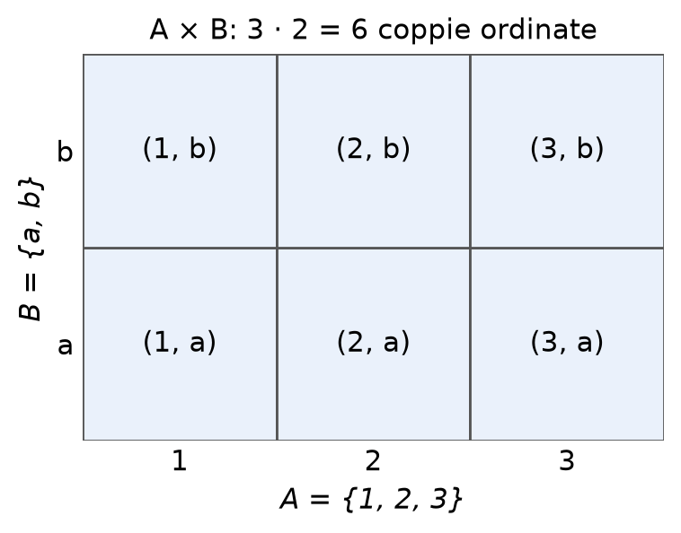
Il prodotto cartesiano A × B come griglia di coppie ordinate.
Se uno dei due insiemi è vuoto, anche il prodotto è vuoto: ∅ × B = A × ∅ = ∅, perché non c'è modo di formare una coppia. Il prodotto si estende a n insiemi: A₁ × … × An è l'insieme delle n-uple ordinate (a₁, …, an) con ai ∈ Ai, e se gli insiemi sono finiti |A₁ × … × An| = |A₁| · … · |An| (come si vedrà nel capitolo 22). La formula |A × B| = |A| · |B| vale anche quando un insieme è infinito, purché l'altro non sia vuoto: in quel caso il prodotto è infinito.
4. Operazioni Avanzate sugli Insiemi
Differenza tra Insiemi e Insieme Complementare
Oltre alle operazioni di unione e intersezione viste nelle lezioni precedenti, la teoria degli insiemi definisce la differenza tra insiemi e il concetto di complementare.
Differenza di Insiemi (A ∖ B): Dati due insiemi A e B definiti all'interno di un comune universo di riferimento, l'insieme differenza A ∖ B è formato da tutti e soli gli elementi che appartengono ad A ma non appartengono a B:
A ∖ B = {x | x ∈ A ∧ x ∉ B}
In parole povere: A meno B è ciò che resta di A dopo aver tolto gli elementi che stanno anche in B. Esempio: {1, 2, 3} meno {2, 3, 4} fa {1}. L'ordine conta: B meno A darebbe {4}.
In generale, la differenza tra insiemi non è commutativa: esistono insiemi per cui A ∖ B ≠ B ∖ A (ad esempio per A = {1, 2} e B = {2, 3} si ha A ∖ B = {1} e B ∖ A = {3}).
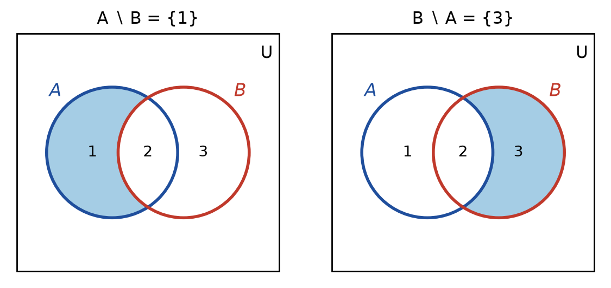
La differenza non è commutativa: A ∖ B ≠ B ∖ A.
Complementare (𝒞A(S)): Nel caso particolare in cui un insieme S figuri come sottoinsieme dell'universo A (S ⊆ A), la differenza A ∖ S prende il nome specifico di complementare di S rispetto ad A, indicato con la notazione 𝒞A(S):
𝒞A(S) = {x ∈ A | x ∉ S}
In parole povere: il complementare è «tutto il resto»: fissato un universo, sono gli elementi che non stanno in S. Esempio: nell'universo dei numeri da 1 a 10, il complementare dei pari sono i dispari.
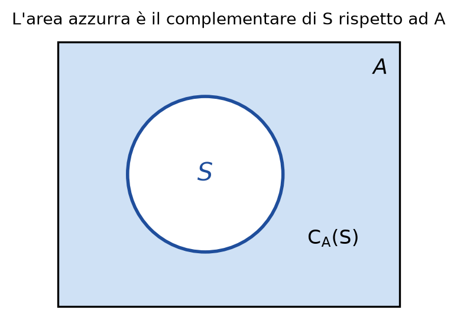
Il complementare di S rispetto all'universo A.
Notazione del libro. Nel libro il complementare si scrive 𝒞X(A), con X l'universo e A il sottoinsieme: le lettere sono scambiate rispetto a quanto scritto qui, ma la definizione è la stessa. Due esempi: 𝒞ℝ(ℚ) = ℝ ∖ ℚ è l'insieme dei numeri irrazionali, e ℝ ∖ ℤ è il complementare di ℤ in ℝ. Differenza e complementare non vanno confusi: la differenza A ∖ B si può calcolare per due insiemi qualunque (anche quando B non è contenuto in A, e in tal caso A ∖ B = A ∖ (A ∩ B)), mentre il complementare presuppone che il sottoinsieme sia contenuto nell'universo.
Proprietà Fondamentali del Complementare
Se S ⊆ A, si verificano le seguenti identità immediate:
Complementari degli insiemi estremi: Il complementare dell'insieme vuoto coincide con l'intero universo (𝒞A(∅) = A), mentre il complementare dell'universo stesso è l'insieme vuoto (𝒞A(A) = ∅).
Involutività del Complementare: Applicare due volte la complementazione restituisce l'insieme di partenza:
𝒞A(𝒞A(S)) = S
Disgiunzione e Ricoprimento Totale: L'intersezione tra un insieme e il suo complementare è sempre priva di elementi (𝒞A(S) ∩ S = ∅), mentre la loro unione ricostruisce l'intero insieme universale A (S ∪ 𝒞A(S) = A).
Le Leggi di De Morgan e la loro Dimostrazione Rigorosa
Le Leggi di De Morgan stabiliscono una fondamentale relazione algebrica di dualità che lega l'unione e l'intersezione con l'operazione di complementazione. Dal punto di vista intuitivo e mnemonico, esse si sintetizzano dicendo che "il complementare scambia l'unione con l'intersezione e viceversa".
Teorema (Leggi di De Morgan)
Siano S, T ⊆ A due sottoinsiemi definiti in un universo A. Valgono le due seguenti uguaglianze:
Prima Legge: 𝒞A(S ∪ T) = 𝒞A(S) ∩ 𝒞A(T) (Il complementare dell'unione è l'intersezione dei complementari).
Seconda Legge: 𝒞A(S ∩ T) = 𝒞A(S) ∪ 𝒞A(T) (Il complementare dell'intersezione è l'unione dei complementari).
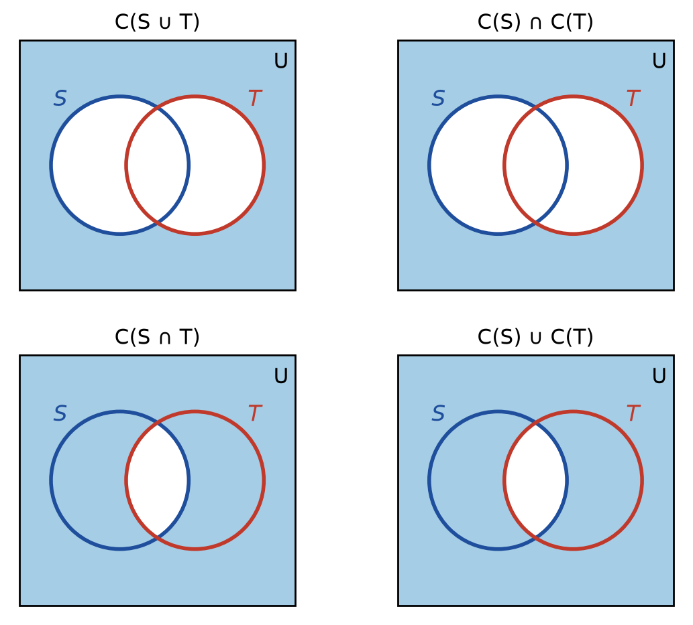
Leggi di De Morgan: in ogni riga le due regioni azzurre coincidono.
Dimostrazione Formale per Equivalenze Logiche (Prima Legge)
Per verificare rigorosamente la prima legge senza ricorrere unicamente ai diagrammi di Venn, si mostra la catena di equivalenze logiche per un generico elemento x ∈ A:
x ∈ 𝒞A(S ∪ T) ⟺ x ∈ A ∧ x ∉ (S ∪ T) (per definizione di complementare)
⟺ x ∈ A ∧ ¬(x ∈ S ∨ x ∈ T) (per definizione di unione)
⟺ x ∈ A ∧ (x ∉ S ∧ x ∉ T) (per legge logica della negazione: ¬(P ∨ Q) ⟺ ¬ P ∧ ¬ Q)
⟺ (x ∈ A ∧ x ∉ S) ∧ (x ∈ A ∧ x ∉ T) (per idempotenza e riordinamento logico)
⟺ x ∈ 𝒞A(S) ∧ x ∈ 𝒞A(T) (per definizione di complementare)
⟺ x ∈ 𝒞A(S) ∩ 𝒞A(T) (per definizione di intersezione)
Poiché ogni passaggio è legato da una doppia implicazione (⟺), l'uguaglianza insiemistica è formalmente dimostrata.
Dimostrazione Formale della Seconda Legge
Analogamente, si dimostra la seconda legge verificando che x ∈ 𝒞A(S ∩ T) ⟺ x ∈ 𝒞A(S) ∪ 𝒞A(T):
x ∈ 𝒞A(S ∩ T) ⟺ x ∈ A ∧ x ∉ (S ∩ T) (per definizione di complementare)
⟺ x ∈ A ∧ ¬(x ∈ S ∧ x ∈ T) (per definizione di intersezione)
⟺ x ∈ A ∧ (x ∉ S ∨ x ∉ T) (per legge logica: ¬(P ∧ Q) ⟺ ¬ P ∨ ¬ Q)
⟺ (x ∈ A ∧ x ∉ S) ∨ (x ∈ A ∧ x ∉ T) (distributività della congiunzione ∧ sulla disgiunzione ∨)
⟺ x ∈ 𝒞A(S) ∨ x ∈ 𝒞A(T) (per definizione di complementare)
⟺ x ∈ 𝒞A(S) ∪ 𝒞A(T) (per definizione di unione)
Le leggi di De Morgan valgono per una famiglia qualunque di sottoinsiemi {Si}i ∈ I di A: 𝒞A(⋃ Si) = ⋂ 𝒞A(Si) e 𝒞A(⋂ Si) = ⋃ 𝒞A(Si). La dimostrazione è la stessa, con i quantificatori ∃ e ∀ al posto di ∨ e ∧ (la negazione di ∃ è ∀ e viceversa). Esiste anche la versione con la differenza, valida per insiemi qualunque: X ∖ (S ∪ T) = (X ∖ S) ∩ (X ∖ T) e X ∖ (S ∩ T) = (X ∖ S) ∪ (X ∖ T).
L'Insieme delle Parti (𝒫(A) o 2A)
Assegnato un qualsiasi insieme A, è possibile costruire una nuova struttura astratta i cui elementi costitutivi sono tutti i possibili sottoinsiemi che si possono estrarre da A.
Definizione Formale: L'insieme delle parti (o insieme potenza) di A, denotato con la notazione 𝒫(A) oppure 2A, è definito come:
𝒫(A) = {S | S ⊆ A}
In parole povere: l'insieme delle parti è la scatola che contiene come elementi tutti i sottoinsiemi di A, compreso quello vuoto e A stesso. Esempio: per A = {a, b} i sottoinsiemi sono ∅, {a}, {b}, {a, b}, e l'insieme delle parti è proprio la scatola con questi quattro oggetti dentro.
Nota Cruciale sulla Natura degli Elementi: Gli elementi di 𝒫(A) sono anch'essi insiemi. Per qualsiasi insieme A, l'insieme vuoto ∅ e l'insieme stesso A appartengono sempre a 𝒫(A) come singoli elementi:
∅ ∈ 𝒫(A) e A ∈ 𝒫(A)
Analisi Progressiva della Cardinalità per Insiemi Finiti
Esaminiamo l'insieme delle parti al variare del numero di elementi n = |A|:
n = 0 (A = ∅): L'unico sottoinsieme dell'insieme vuoto è l'insieme vuoto stesso. Pertanto 𝒫(∅) = {∅}, con cardinalità |𝒫(∅)| = 1 = 20.
n = 1 (A = {a}): I sottoinsiemi possibili sono l'insieme vuoto e l'insieme formato dal singolo elemento {a}. Dunque 𝒫(A) = {∅, {a}}, con cardinalità |𝒫(A)| = 2 = 21.
n = 2 (A = {a, b}): I sottoinsiemi includono ∅, i due singoletti {a} e {b}, e l'insieme intero {a, b}. Dunque 𝒫(A) = {∅, {a}, {b}, {a, b}}, con cardinalità |𝒫(A)| = 4 = 22.
n = 3 (A = {a, b, c}): Elencando l'insieme vuoto ∅, i tre singoletti ({a}, {b}, {c}), le tre coppie ({a, b}, {a, c}, {b, c}) e l'insieme intero {a, b, c}, si contano in tutto 8 sottoinsiemi. Dunque |𝒫(A)| = 8 = 23.
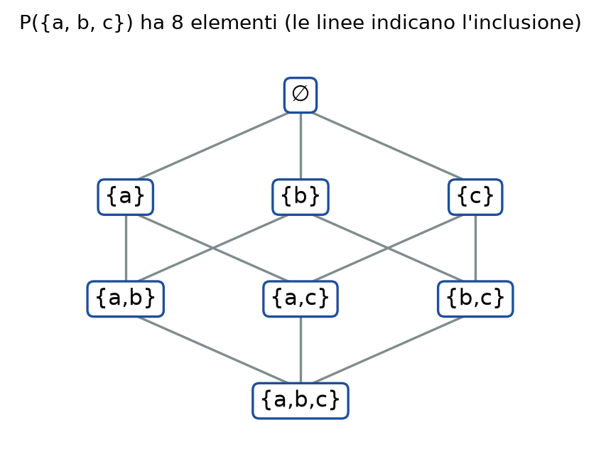
L'insieme delle parti di {a, b, c}: 8 sottoinsiemi ordinati per inclusione.
Teorema sulla Cardinalità dell'Insieme delle Parti
La progressione numerica 1, 2, 4, 8, … conduce direttamente alla formulazione del teorema generale: se A è un insieme finito contenente n = |A| elementi, la cardinalità del suo insieme delle parti è data da:
|𝒫(A)| = 2n
5. Costruzione Assiomatica dei Numeri Naturali (ℕ) e il Principio di Induzione
La Necessità dell'Approccio Assiomatico e i 5 Assiomi di Peano
Tra la fine dell'Ottocento e l'inizio del Novecento, la comunità matematica cercò di definire i numeri naturali a partire dalle strutture insiemistiche più elementari. Gli assiomi di Peano (1889) seguono un'altra strada: non costruiscono i numeri naturali a partire dagli insiemi, ma li caratterizzano dando un elemento iniziale, lo 0, e una funzione successore con proprietà precise. (Il paradosso di Russell, del 1901, relativo alla collezione di tutti gli insiemi che non contengono se stessi, mostrò poi che la teoria ingenua degli insiemi va maneggiata con cautela.)
Si giunse così a caratterizzare l'insieme dei numeri naturali ℕ = {0, 1, 2, 3, …} attraverso i 5 Assiomi di Giuseppe Peano. Il sistema si basa su un elemento iniziale (lo 0) e su una funzione successore S: ℕ → ℕ (dove intuitivamente S(n) = n + 1):
Esistenza dello zero: 0 ∈ ℕ (l'insieme dei naturali non è vuoto).
Esistenza del successore: Per ogni n ∈ ℕ, esiste un unico successore S(n) ∈ ℕ.
Iniettività della funzione successore: Numeri naturali distinti hanno successori distinti:
∀ m, n ∈ ℕ, m ≠ n ⟹ S(m) ≠ S(n)
Lo zero come elemento iniziale: Il numero 0 non è il successore di alcun numero naturale:
∀ n ∈ ℕ, S(n) ≠ 0
Assioma di Induzione: Sia U ⊆ ℕ un sottoinsieme di numeri naturali. Se U soddisfa le due condizioni:
0 ∈ U
∀ n ∈ U ⟹ S(n) ∈ U
allora U = ℕ.
Il Ruolo del Quinto Assioma
I primi quattro assiomi da soli non bastano a identificare in modo univoco l'insieme ℕ, poiché ammetterebbero strutture patologiche composte da catene infinite "separate" (ad esempio, ℕ affiancato da una seconda catena infinita separata (…, −1′, 0′, 1′, …) i cui elementi non si raggiungono mai partendo da 0 con il successore: una struttura del genere soddisfa i primi quattro assiomi ma non il quinto). Il quinto assioma garantisce che qualsiasi numero naturale è raggiungibile a partire da 0 in un numero finito di iterazioni della funzione successore.
Il Principio di Induzione Matematica come Tecnica Dimostrativa
Il quinto assioma di Peano si traduce in uno strumento dimostrativo di primaria importanza: il Principio di Induzione.
Per dimostrare che una determinata proprietà P(n) è vera per tutti i numeri naturali n ≥ 0 (oppure n ≥ 1), si articola la prova in due fasi obbligatorie:
Base dell'Induzione: Si verifica che la proprietà sia valida per il caso iniziale, ossia che P(0) (o P(1)) sia vera.
Passo Induttivo (P(n) ⟹ P(n+1)): Si assume vera la proprietà per un generico n (Ipotesi Induttiva) e si dimostra che essa continua a valere per il successore n+1 (Tesi Induttiva).
Un'efficace analogia visiva è quella dell'effetto domino: verificare la base induttiva equivale a far cadere la prima tessera; dimostrare il passo induttivo assicura che la caduta della tessera n-esima trascina inevitabilmente con sé la tessera n+1, provocando la caduta dell'intera sequenza infinita.
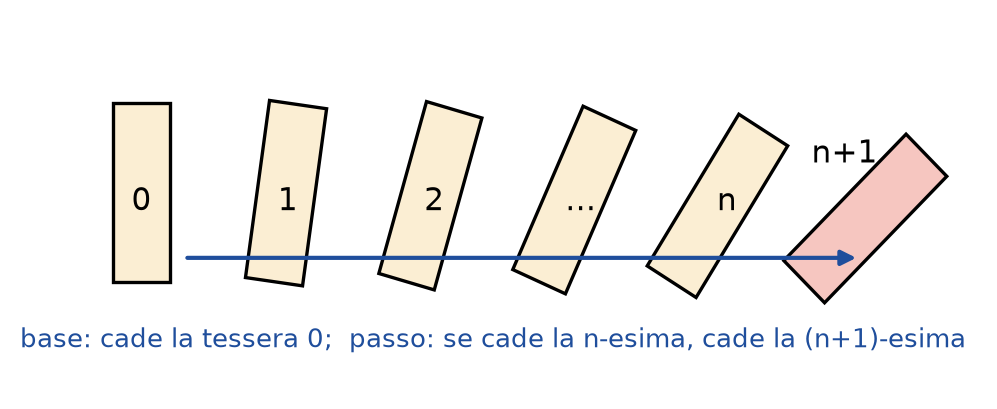
L'effetto domino: la base fa cadere la prima tessera, il passo induttivo le fa cadere tutte.
Perché il principio funziona. Si deduce dal quinto assioma. Sia P(n) una proprietà e sia U = {n ∈ ℕ | P(n) è vera}. Se vale la base P(0), allora 0 ∈ U; se vale il passo induttivo, per ogni n ∈ U si ha S(n) ∈ U, cioè anche n + 1 appartiene a U. Quindi U soddisfa le due condizioni dell'assioma di induzione e U = ℕ: la proprietà è vera per ogni n. Se la base è n = 1 si applica lo stesso ragionamento a U = {n ∈ ℕ | P(n + 1)}, e più in generale la base può essere un qualunque n₀: la proprietà risulta dimostrata per ogni n ≥ n₀.
Applicazioni Concrete del Principio di Induzione
Applicazione 1: Somma dei Primi n Quadrati
Vogliamo dimostrare la formula per la somma dei quadrati dei primi n numeri naturali:
P(n): 12 + 22 + 32 + … + n2 = (1/6)n(n+1)(2n+1) ∀ n ≥ 1
Base dell'induzione (n = 1): A sinistra abbiamo 12 = 1. A destra sostituiamo n=1: 1/6 · 1 · (1+1) · (2· 1 + 1) = 1/6 · 1 · 2 · 3 = 1. La base è verificata.
Passo induttivo (P(n) ⟹ P(n+1)): Assumiamo vera l'ipotesi induttiva P(n) e sommiamo il termine (n+1)2 a entrambi i membri:
12 + 22 + … + n2 + (n+1)2 = [ (1/6)n(n+1)(2n+1) ] + (n+1)2 (per Ipotesi Induttiva)
= (n+1) [ (n(2n+1) + 6(n+1))/6 ] (Raccoglimento parziale di (n+1))
= (n+1)/6 ( 2n2 + n + 6n + 6 )
= (n+1)/6 ( 2n2 + 7n + 6 )
Fattorizzando il trinomio 2n2 + 7n + 6 = (n+2)(2n+3), otteniamo esattamente:
(1/6)(n+1)(n+2)(2(n+1)+1)
La formula per n+1 è verificata e la proprietà vale per ogni n ≥ 1.
Un'induzione con base diversa da 0 e da 1. Si dimostra che n² > 2n + 1 per ogni n ≥ 3. Base (n = 3): 9 > 7. Passo induttivo: si assume n² > 2n + 1 e si somma 2n + 1 a entrambi i membri, ottenendo (n + 1)² = n² + 2n + 1 > (2n + 1) + (2n + 1) = 4n + 2 ≥ 2n + 3 = 2(n + 1) + 1, dove l'ultima disuguaglianza vale perché 2n ≥ 1. Analogamente 2n > n² per ogni n ≥ 5: base 32 > 25; passo: 2n+1 = 2 · 2n > 2n² = n² + n² > n² + 2n + 1 = (n + 1)², usando la disuguaglianza appena dimostrata.
Applicazione 2: Dimostrazione Rigorosa del Teorema |𝒫(A)| = 2n
Dimostriamo per induzione che un insieme finito A con n elementi possiede esattamente 2n sottoinsiemi.
Base dell'induzione (n = 0): Se |A| = 0, allora A = ∅. L'insieme delle parti è 𝒫(∅) = {∅}, che ha cardinalità |𝒫(∅)| = 1 = 20. La base è vera.
Passo induttivo (P(n) ⟹ P(n+1)): Assumiamo che ogni insieme di n elementi abbia 2n sottoinsiemi. Consideriamo ora un insieme A con n+1 elementi:
A = {a1, a2, …, an, an+1}
Isoliamo l'elemento an+1 e consideriamo l'insieme ridotto A' = A ∖ {an+1} = {a1, …, an}, di cardinalità |A'| = n.
I sottoinsiemi S ∈ 𝒫(A) si dividono in due famiglie nettamente disgiunte:
Sottoinsiemi che NON contengono an+1: Sono esattamente i sottoinsiemi di A'. Per ipotesi induttiva, essi sono 2n.
Sottoinsiemi che CONTENGONO an+1: Ciascuno di essi si ottiene prendendo un sottoinsieme della prima famiglia e aggiungendovi l'elemento an+1 (T ∪ {an+1} con T ⊆ A'). Esistendo una corrispondenza biunivoca perfetta, anch'essi sono esattamente 2n.
Sommando le due famiglie disgiunte, la cardinalità totale risulta:
|𝒫(A)| = 2n + 2n = 2 · 2n = 2n+1
Il teorema è dimostrato per ogni n ∈ ℕ.
6. Strutture di Sub-Insiemi: Ricoprimenti e Partizioni
Definizione di Ricoprimento
Quando si lavora con collezioni di sottoinsiemi destinate a ricostruire un insieme di partenza S, si introduce il concetto di ricoprimento.
Definizione Formale: Sia S un insieme non vuoto. Una famiglia di sottoinsiemi ℱ = {Ai}{i ∈ I} (dove ciascun Ai ⊆ S per un insieme di indici I) è detta ricoprimento di S se l'unione globale di tutti i sottoinsiemi della famiglia restituisce l'intero insieme S:
⋃{i ∈ I} Ai = S
In parole povere: un ricoprimento è una famiglia di pezzi di S che, messi insieme, coprono tutto S senza lasciare fuori niente. I pezzi possono sovrapporsi, come tegole che coprono il tetto anche con un po' di sovrapposizione.
Esempio di Ricoprimento Generale
Consideriamo l'insieme dei numeri naturali ℕ e i tre sottoinsiemi:
A1 = {n ∈ ℕ | 0 ≤ n ≤ 1000}
A2 = {n ∈ ℕ | 100 ≤ n ≤ 10.000}
A3 = {n ∈ ℕ | n > 1000}
La loro unione globale A1 ∪ A2 ∪ A3 = ℕ ricopre l'intero insieme dei naturali. Tuttavia, notiamo che gli insiemi A1 e A2 condividono diversi elementi (ad esempio tutti i numeri compresi tra 100 e 1000 appartengono a entrambi).
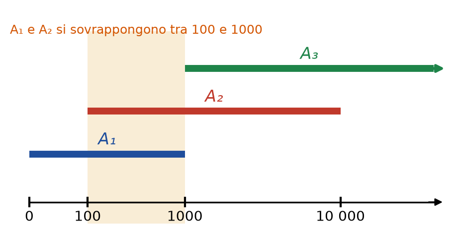
Un ricoprimento di ℕ: A₁ e A₂ si sovrappongono tra 100 e 1000.
Definizione Formale di Partizione
In molte applicazioni informatiche ed algebriche (come lo studio delle relazioni di equivalenza, la gestione della memoria o l'analisi dei grafi), occorre che la suddivisione di un insieme avvenga tramite blocchi completamente separati e privi di sovrapposizioni.
Definizione Formale: Una famiglia di sottoinsiemi 𝒫 = {Ai}i ∈ I è detta partizione dell'insieme S se costituisce un ricoprimento di S e soddisfa due condizioni vincolanti aggiuntive:
Non vuotezza dei blocchi: Nessun sottoinsieme appartenente alla famiglia è vuoto:
Ai ≠ ∅ ∀ i ∈ I
Disgiunzione a due a due: Blocchi distinti non hanno elementi in comune (la loro intersezione a due a due è sempre vuota):
Ai ∩ Aj = ∅ ∀ i, j ∈ I con i ≠ j
In parole povere: una partizione è un ricoprimento «pulito»: S viene diviso in pezzi tutti non vuoti, che non si sovrappongono mai e insieme coprono tutto. Ogni elemento sta in uno e un solo pezzo, come gli studenti divisi in squadre. Esempio: pari e dispari dividono i naturali.
I singoli sottoinsiemi Ai che compongono la partizione vengono comunemente chiamati blocchi della partizione.
In parole povere: i blocchi sono i singoli pezzi in cui la partizione ha diviso l'insieme, cioè le «squadre».
Nota di notazione. In questo capitolo e nel successivo la partizione è indicata con 𝒫 = {Ai}, ma lo stesso simbolo 𝒫 indica anche l'insieme delle parti 𝒫(S). Per evitare confusione il libro indica con 𝒜 la famiglia di sottoinsiemi (ricoprimento o partizione) e riserva 𝒫(S) all'insieme delle parti: quando le due cose compaiono nella stessa formula, come in Q ⊆ 𝒫(S), la 𝒫 senza argomento va letta come 𝒜.
Esempi Pratici e Trabocchetti d'Esame sulle Partizioni
Esempio 1: Partizione Valida su ℕ (Pari e Dispari)
Consideriamo la suddivisione dell'insieme dei numeri naturali ℕ nei due sottoinsiemi dei numeri pari (P) e dei numeri dispari (D):
P = {n ∈ ℕ | n è pari} = {0, 2, 4, 6, …}
D = {n ∈ ℕ | n è dispari} = {1, 3, 5, 7, …}
Verifichiamo puntualmente le tre condizioni formali:
Ricoprimento: P ∪ D = ℕ (ogni numero naturale è necessariamente pari o dispari).
Non vuotezza: P ≠ ∅ e D ≠ ∅ (entrambi contengono infiniti elementi).
Disgiunzione a due a due: P ∩ D = ∅ (non esiste alcun numero naturale che sia contemporaneamente sia pari sia dispari).
Dunque, la famiglia {P, D} costituisce una partizione valida dell'insieme ℕ.
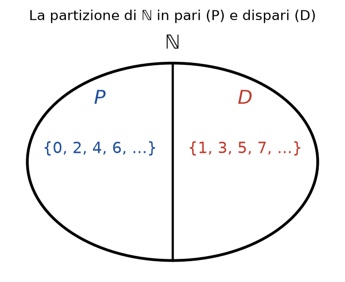
Una partizione di ℕ: pari e dispari non si sovrappongono e coprono tutto.
Esempio 2: Esempio di NON Partizione (Trabocchetto d'Esame)
Sia X = {1, 2, 3, 4, 5} e consideriamo i due sottoinsiemi A1 = {1, 2, 3} e A2 = {3, 4, 5}.
L'unione A1 ∪ A2 = {1, 2, 3, 4, 5} = X costituisce un ricoprimento completo di X.
Tuttavia, l'intersezione A1 ∩ A2 = {3} ≠ ∅ non è vuota.
Poiché l'elemento 3 appartiene a entrambi i blocchi sovrapponendoli, la famiglia {A1, A2} non è una partizione.
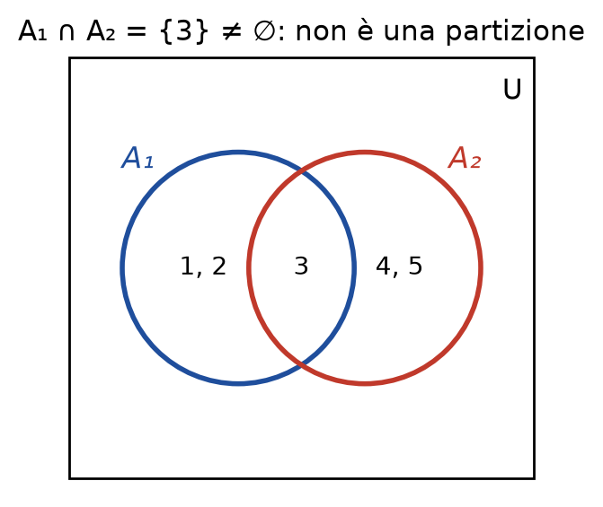
Un ricoprimento che non è una partizione: 3 sta in entrambi i blocchi.
Esempio 3: Inclusione dell'Insieme Vuoto (Altro Trabocchetto)
Se consideriamo la famiglia ℱ = {{1, 2}, {3, 4}, ∅} per l'insieme Y = {1, 2, 3, 4}:
Sebbene l'unione dia Y e i blocchi non vuoti siano disgiunti, la presenza dell'insieme vuoto ∅ viola la prima condizione delle partizioni. Di conseguenza, ℱ non è una partizione valida.
Altri esempi sulle partizioni
Dato un insieme S e un suo sottoinsieme A con A ≠ ∅ e A ≠ S, la famiglia {A, 𝒞S(A)} è una partizione di S: i due blocchi non sono vuoti, sono disgiunti e la loro unione è S. In ℝ gli intervalli An = [n, n + 1] con n ∈ ℤ sono un ricoprimento ma non una partizione, perché due intervalli consecutivi si toccano in un estremo (il numero n + 1 appartiene sia ad An sia ad An+1); gli intervalli semiaperti [n, n + 1) formano invece una partizione di ℝ. Infine, per ogni intero n ≥ 1 sia Pn l'insieme delle frazioni m/n ridotte ai minimi termini con denominatore n: al variare di n i Pn sono una partizione di ℚ, perché ogni numero razionale si scrive in modo unico come frazione ridotta con denominatore positivo.
7. Insiemi Numerici, Partizioni e Insieme Quoziente
Richiami sugli Insiemi Numerici e Inclusioni Successive
Prima di introdurre le relazioni astratte tra elementi, la lezione ripercorre la struttura e la gerarchia dei principali insiemi numerici della matematica. Essi si sviluppano secondo una catena di inclusione stretta e progressiva:
ℕ ⊂ ℤ ⊂ ℚ ⊂ ℝ
Numeri Naturali (ℕ): ℕ = {0, 1, 2, 3, …}. Rappresentano l'insieme fondamentale per contare. Come visto nella lezione precedente, la loro struttura è definita dagli assiomi di Peano.
Numeri Interi Relativi (ℤ): ℤ = {…, -3, -2, -1, 0, 1, 2, 3, …}. Insieme introdotto per garantire la risolubilità di qualsiasi operazione di sottrazione (chiusura rispetto all'opposto).
Numeri Razionali (ℚ): ℚ = {m/n | m, n ∈ ℤ, n ≠ 0}. Insieme formato dalle frazioni e dai numeri decimali finiti o periodici, introdotto per garantire la divisione per numeri diversi da zero.
Numeri Reali (ℝ): Comprende sia i numeri razionali sia i numeri irrazionali (come √2 o π), necessari per misurare grandezze continue e riempire la retta numerica senza "buchi".
Mentre l'analisi matematica si sviluppa prevalentemente sull'insieme continuo ℝ, la matematica discreta focalizza la propria indagine sugli insiemi discreti ℕ e ℤ.
Costruzione dell'Insieme Quoziente (Q ⊆ 𝒫(S))
Una volta suddiviso un insieme S mediante una partizione 𝒫, la teoria degli insiemi permette di effettuare un importante salto di astrazione: considerare i singoli blocchi non più come insiemi di elementi, ma come nuovi elementi individuali di un insieme di livello superiore.
Definizione Formale: Data una partizione 𝒫 = {Ai}i ∈ I di un insieme S, si definisce insieme quoziente (denotato comunemente con Q o con la notazione S/𝒫) l'insieme il cui contenuto è costituito precisamente dai blocchi della partizione:
Q = {Ai | i ∈ I}
In parole povere: l'insieme quoziente è l'elenco dei blocchi della partizione, ciascuno considerato come un unico oggetto. Si smette di guardare i singoli elementi e si guardano le squadre. Esempio: per pari e dispari il quoziente è {P, D} e ha solo 2 elementi.
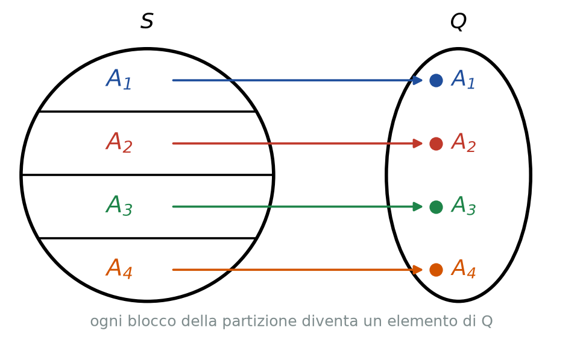
Dall'insieme S diviso in blocchi all'insieme quoziente Q: ogni blocco A_i diventa un elemento di Q.
Collocazione Gerarchica e Insieme delle Parti
Poiché ciascun blocco Ai della partizione è per definizione un sottoinsieme di S (Ai ⊆ S), ogni blocco appartiene all'insieme delle parti di S (Ai ∈ 𝒫(S)). Di conseguenza, l'insieme quoziente Q figura come un sottoinsieme dell'insieme delle parti:
Q ⊆ 𝒫(S)
Esempio Chiarificatore d'Esame
Consideriamo l'insieme dei numeri naturali ℕ e la sua partizione canonica nei sottoinsiemi dei numeri pari P e dei numeri dispari D.
I sottoinsiemi P e D contengono ciascuno infiniti numeri naturali (|P| = ∞, |D| = ∞).
L'insieme quoziente associato a questa partizione è:
Q = {P, D}
La cardinalità dell'insieme quoziente è finita e pari a due (|Q| = 2), poiché i suoi unici due elementi sono i due oggetti-blocco P e D.
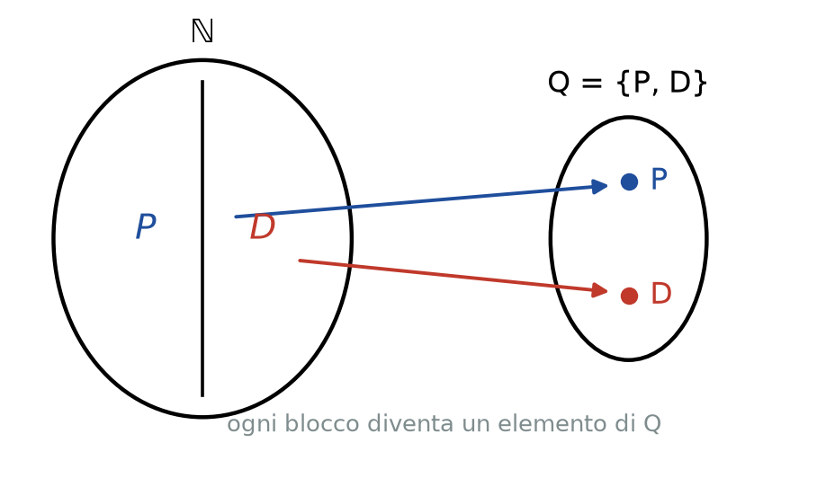
Dalla partizione all'insieme quoziente: ogni blocco diventa un elemento di Q.
8. Relazioni Binarie, Proprietà Fondamentali e Relazioni di Equivalenza
Formalizzazione delle Relazioni Binarie nel Prodotto Cartesiano
Nelle applicazioni matematiche e informatiche si avverte spesso l'esigenza di confrontare tra loro due elementi appartenenti a un medesimo insieme S (ad esempio per verificare quale numero sia minore di un altro, per stabilire la divisibilità tra interi, o per confrontare entità astratte come comuni italiani in base alla popolazione).
Nel linguaggio formale della teoria degli insiemi, effettuare un confronto tra due elementi richiede necessariamente di considerare una coppia ordinata (x, y) appartenente al prodotto cartesiano S × S. L'ordine è vincolante: scambiare la posizione degli elementi modifica la natura del confronto (ad esempio, l'affermazione 3 ≤ 7 è vera, mentre 7 ≤ 3 è falsa).
Definizione Formale: Sia S un insieme non vuoto. Una relazione binaria R su S è un qualsiasi sottoinsieme del prodotto cartesiano S × S:
R ⊆ S × S
In parole povere: una relazione binaria è una regola che dice quali coppie di elementi «sono collegate». La si descrive scegliendo, tra tutte le coppie possibili, quelle collegate. Esempio: la relazione «minore o uguale» sui numeri è l'insieme delle coppie (a, b) con a minore o uguale a b.
Notazione Infissa: Se la coppia ordinata (x, y) appartiene al sottoinsieme R (ossia (x, y) ∈ R), si dice che x è in relazione con y e si scrive in forma infissa:
x R y
Se la coppia non appartiene ad R (ossia (x, y) ∉ R), si scrive x R̸ y.
Esempi di Relazioni Binarie
Relazione d'Ordine ≤ su ℤ: Corrisponde al sottoinsieme R = {(m, n) ∈ ℤ × ℤ | m ≤ n}. Ad esempio, (1, 3) ∈ R (vale 1 ≤ 3), mentre (2, -4) ∉ R (poiché 2 ≰ -4).
Relazione di Divisibilità (m | n) su ℤ: Un intero m è in relazione con n se m divide n (ossia n è un multiplo di m). Ad esempio, 3 | 9 è vera (quindi (3, 9) ∈ R), mentre 3 | 5 è falsa.
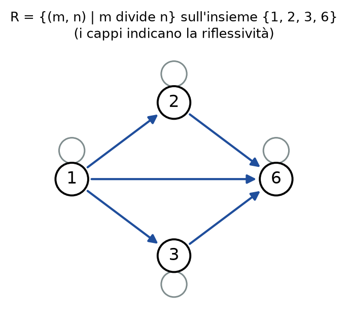
La divisibilità su {1, 2, 3, 6} come grafo orientato: una freccia da m a n se m divide n.
Relazioni Geometriche: Nell'insieme delle rette del piano euclideo, si possono definire le relazioni di parallelismo (r ∥ s) e di perpendicolarità (r ⊥ s).
Le Quattro Proprietà Fondamentali delle Relazioni Binarie
Non tutti i sottoinsiemi di S × S risultano matematicamente interessanti. Per isolare le relazioni più utili, la matematica definisce quattro proprietà strutturali fondamentali che una relazione R ⊆ S × S può soddisfare:
Riflessività: Ogni elemento dell'insieme è in relazione con se stesso:
∀ x ∈ S, x R x
In parole povere: una relazione è riflessiva se ogni elemento è collegato a sé stesso. Esempio: «avere lo stesso compleanno di» è riflessiva perché ognuno ha lo stesso compleanno di sé stesso.
Esempio: La relazione ≤ è riflessiva poiché x ≤ x per ogni x ∈ ℤ. L'uguaglianza (=) è riflessiva.
Simmetria: Se un elemento x è in relazione con y, allora anche y è in relazione con x:
∀ x, y ∈ S, x R y ⟹ y R x
In parole povere: una relazione è simmetrica se il collegamento vale in entrambi i sensi: se x è collegato a y, allora anche y lo è a x. Esempio: «essere fratelli» è simmetrica, «essere più alto di» no.
Esempio: L'uguaglianza (=), il parallelismo (∥) e la perpendicolarità (⊥) sono simmetriche. La relazione ≤ non è simmetrica (2 ≤ 4 ma 4 ≰ 2).
Antisimmetria: L'unico modo in cui due elementi possano essere in relazione simmetrica reciproca è che essi coincidano:
∀ x, y ∈ S, (x R y ∧ y R x) ⟹ x = y
In parole povere: una relazione è antisimmetrica se l'unico modo di essere collegati in entrambi i sensi è essere lo stesso elemento. Esempio: se a è minore o uguale a b e b è minore o uguale ad a, per forza a e b sono uguali.
Esempio: La relazione ≤ è antisimmetrica (se a ≤ b e b ≤ a, allora a = b).
Trabocchetto d'Esame: Dipendenza dall'Insieme di Riferimento
La validità di una proprietà non dipende soltanto dalla regola della relazione, ma anche dall'insieme S su cui viene definita.
Caso della Divisibilità:
Nell'insieme dei numeri naturali ℕ, la divisibilità è antisimmetrica: se , allora a = b.
Nell'insieme dei numeri interi ℤ, la divisibilità NON è antisimmetrica: infatti 1 / -1 e -1 / 1, ma 1 ≠ -1.
Transitività: Se x è in relazione con y e y è in relazione con z, allora x è in relazione con z:
∀ x, y, z ∈ S, (x R y ∧ y R z) ⟹ x R z
In parole povere: una relazione è transitiva se i collegamenti si possono concatenare: se x porta a y e y porta a z, allora x porta direttamente a z. Esempio: «essere più alto di» è transitiva: se Anna è più alta di Bea e Bea di Carla, Anna è più alta di Carla.
Esempi: La relazione ≤, l'uguaglianza (=), la divisibilità e il parallelismo tra rette sono proprietà transitive. La perpendicolarità tra rette nel piano non è transitiva (se r ⊥ s e s ⊥ t, le rette r e t risultano parallele tra loro).
Relazioni di Equivalenza
Quando si lavora con insiemi complessi, spesso si desidera raggruppare elementi distinti che, sotto un determinato punto di vista, si comportano in modo identico e possono essere considerati "intercambiabili".
Definizione Formale: Sia S un insieme non vuoto. Una relazione R ⊆ S × S si dice relazione di equivalenza se e solo se soddisfa contemporaneamente le tre seguenti proprietà:
Riflessiva (∀ x ∈ S, x R x)
Simmetrica (∀ x, y ∈ S, x R y ⟹ y R x)
Transitiva (∀ x, y, z ∈ S, (x R y ∧ y R z) ⟹ x R z)
In parole povere: una relazione di equivalenza è un modo di dire che due elementi sono «uguali sotto un certo punto di vista»: ognuno è equivalente a sé stesso, il rapporto vale nei due sensi e si può concatenare. Esempio: «avere la stessa parità» tra interi.
Esempi e Controesempi
Esempi validi: L'uguaglianza (=) su qualsiasi insieme, la relazione di parallelismo tra rette, la congruenza tra figure geometriche e la relazione "avere la stessa parità" (essere entrambi pari o entrambi dispari) su ℤ.
Controesempi (NON equivalenze):
La relazione ≤ non è una relazione di equivalenza poiché difetta della simmetria.
La relazione di divisibilità non è una relazione di equivalenza poiché non è simmetrica.
9. Classi di Equivalenza, Teorema Fondamentale e Concetto Insiemistico di Funzione
Definizione di Classe di Equivalenza e Rappresentante
Quando su un insieme non vuoto S è definita una relazione di equivalenza R (ossia una relazione riflessiva, simmetrica e transitiva), gli elementi di S possono essere raggruppati in sottoinsiemi chiamati classi di equivalenza. Ciascuna classe raccoglie tutti gli elementi tra loro equivalenti rispetto alla proprietà considerata.
Definizione Formale: Sia R una relazione di equivalenza su S e sia x ∈ S un generico elemento. Si definisce classe di equivalenza di x (indicata con le notazioni Cx, [x] o x̄) l'insieme costituito da tutti gli elementi y ∈ S che sono in relazione con x:
Cx = [x] = {y ∈ S | x R y}
In parole povere: la classe di equivalenza di x è il gruppo di tutti quelli che sono equivalenti a x, cioè «la sua squadra». Esempio: con la relazione «stessa parità», la classe di 3 è l'insieme di tutti i dispari.
Rappresentante della Classe: L'elemento x utilizzato per costruire l'insieme prende il nome di rappresentante della classe di equivalenza Cx. Qualsiasi altro elemento appartenente a Cx può essere scelto in sua sostituzione come rappresentante della medesima classe.
In parole povere: il rappresentante è l'elemento che si sceglie per nominare la sua classe, come il capitano di una squadra. Si può scegliere uno qualsiasi della classe e il risultato non cambia.
Proprietà Immediate delle Classi
Non Vuotezza dei Blocchi: Poiché R gode della proprietà riflessiva (x R x per ogni x ∈ S), l'elemento x appartiene sempre alla propria classe di equivalenza (x ∈ Cx). Questo garantisce che nessuna classe di equivalenza è vuota:
Cx ≠ ∅ ∀ x ∈ S
Ricoprimento dell'Insieme: Poiché ogni elemento x ∈ S appartiene ad almeno un blocco (la propria classe Cx), l'unione globale di tutte le classi di equivalenza ricostruisce l'intero insieme universale S:
⋃x ∈ S Cx = S
Il Teorema Fondamentale di Equivalenza e Partizioni
Il risultato centrale della teoria delle relazioni stabilisce la perfetta equivalenza concettuale tra le relazioni di equivalenza e le partizioni di un insieme.
Teorema Fondamentale (Proprietà delle Classi di Equivalenza)
Sia R una relazione di equivalenza su un insieme S. Per ogni coppia di elementi x, y ∈ S, per le relative classi di equivalenza Cx e Cy sussistono soltanto due possibilità mutuamente esclusive:
Cx ∩ Cy = ∅ oppure Cx = Cy
In altre parole: due classi di equivalenza o sono completamente disgiunte (non condividono alcun elemento) oppure coincidono perfettamente e sono la stessa identica classe.
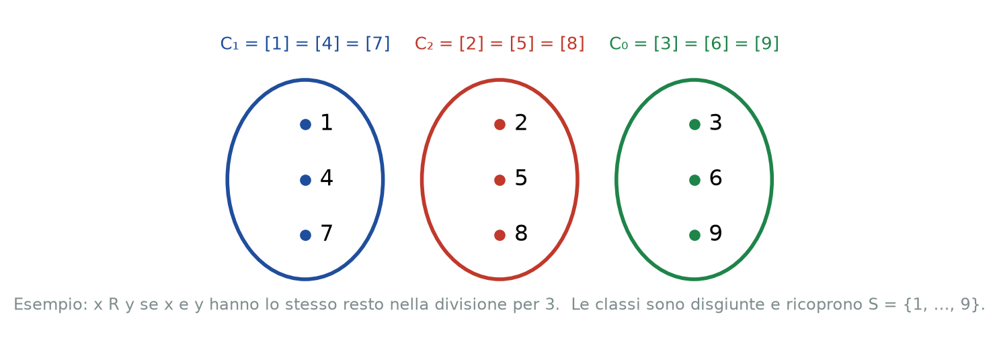
Esempio di classi di equivalenza: disgiunte e con unione uguale all'insieme.
Dimostrazione Formale del Teorema
Per dimostrare l'alternativa, supponiamo che l'intersezione tra le due classi Cx e Cy non sia vuota. Dobbiamo mostrare che da ciò segue necessariamente l'uguaglianza Cx = Cy:
Poiché Cx ∩ Cy ≠ ∅, esiste almeno un elemento comune z ∈ Cx ∩ Cy.
Per definizione di classe di equivalenza, ciò significa che x R z e y R z.
Per la proprietà simmetrica applicata a y R z, otteniamo z R y.
Applicando la proprietà transitiva alla catena x R z e z R y, deduciamo che x R y (ovvero y ∈ Cx).
Consideriamo ora un generico elemento w ∈ Cy, il che significa che y R w. Sfruttando nuovamente la transitività sulla catena x R y e y R w, otteniamo x R w, il che implica che w ∈ Cx. Abbiamo così dimostrato l'inclusione Cy ⊆ Cx.
Invertendo i ruoli di x e y per simmetria, si ottiene l'inclusione opposta Cx ⊆ Cy.
Per il principio della doppia inclusione, concludiamo che Cx = Cy. ∎
L'Insieme Quoziente S/R e il Viceversa
Dalle due proprietà dimostrate (ricoprimento totale e disgiunzione a due a due delle classi distinte) discende che la famiglia delle classi di equivalenza {Cx | x ∈ S} forma una partizione dell'insieme S.
L'insieme formato da tutte le classi di equivalenza prende il nome di insieme quoziente di S rispetto alla relazione R e si indica con la notazione S/R o S/∼:
S/R = {Cx | x ∈ S} ⊆ 𝒫(S)
In parole povere: l'insieme quoziente S/R è l'insieme delle classi di equivalenza, cioè l'elenco delle «squadre» in cui la relazione divide S, ognuna presa come un unico elemento. Esempio: con la parità, S/R ha due elementi, la classe dei pari e quella dei dispari.
Il Viceversa (Dalla Partizione alla Relazione): Data una qualsiasi partizione {Ai}i ∈ I dell'insieme S, è sempre possibile definire su S una relazione di equivalenza R ponendo che due elementi x, y ∈ S sono in relazione (x R y) se e solo se appartengono al medesimo blocco Ai della partizione.
Sintesi Didattica: Esiste una corrispondenza biunivoca perfetta tra le relazioni di equivalenza su un insieme S e le partizioni di S.
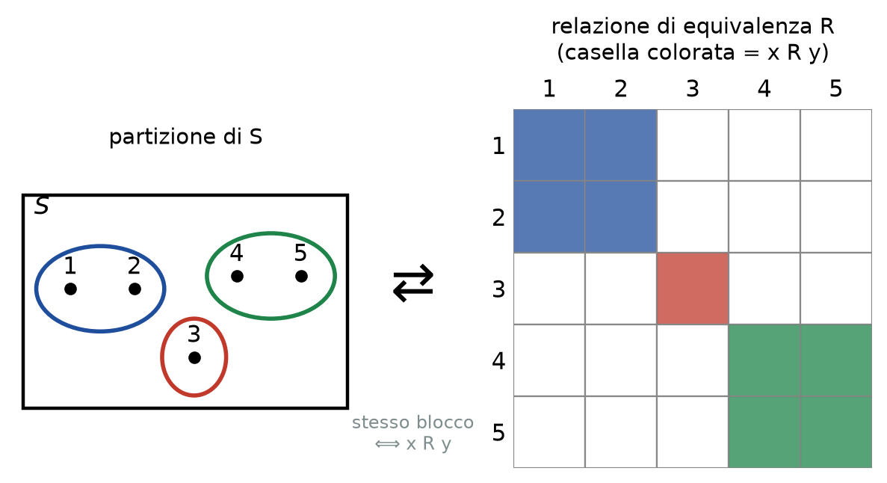
Partizioni e relazioni di equivalenza si corrispondono: x R y se e solo se x e y stanno nello stesso blocco.
Introduzione Astratta al Concetto Insiemistico di Funzione
Nel percorso scolastico tradizionale, una funzione viene solitamente introdotta come un'espressione algebrica o una formula di calcolo reale y = f(x). Tuttavia, in matematica discreta e in computer science questa impostazione presenta due gravi limiti concettuali:
Ristrettezza del Dominio: Limita l'applicazione ai soli numeri reali (ℝ → ℝ), laddove gli algoritmi informatici necessitano di elaborare insiemi discreti, stringhe, grafi o oggetti astratti.
Vincolo della Formula: Richiede l'esistenza di un'espressione analitica esplicita per il calcolo dei valori, ma moltissime relazioni di corrispondenza empiriche o teoriche non dispongono di alcuna formula chiusa.
La Soluzione Insiemistica: Definizione tramite Grafico
Per superare tali limiti e formalizzare il concetto di funzione (detta anche mappa o applicazione) all'interno della sola teoria degli insiemi, si ribalta l'approccio classico: non si costruisce il grafico a partire dalla formula, ma si definisce la funzione direttamente a partire dal suo grafico.
Definizione Formale (Cap. 2, Def. 2.1 Mori): Siano A e B due insiemi non vuoti. Una funzione f con dominio A e codominio B (indicata simbolicamente con la notazione f: A → B) è definita dall'assegnazione di un sottoinsieme Γ ⊆ A × B del prodotto cartesiano, detto grafico della funzione, che soddisfa la seguente condizione di esistenza ed unicità dell'immagine:
∀ a ∈ A, ∃! b ∈ B tale che (a, b) ∈ Γ
Se la coppia ordinata (a, b) appartiene al grafico Γ, si adotta la notazione consueta f(a) = b, intendendo che l'elemento b ∈ B è l'unica immagine di a ∈ A tramite la funzione f.
In parole povere: una funzione è una regola che a ogni elemento del dominio assegna uno e un solo elemento del codominio. Il dominio è l'insieme di partenza, il codominio quello di arrivo, e il grafico è l'elenco delle coppie (ingresso, uscita). Come un distributore: ogni tasto dà un solo prodotto, ma due tasti diversi possono dare lo stesso.
Interpretazione Grafica del Vincolo di Esistenza ed Unicità
Nel piano cartesiano o nei diagrammi ad albero, il requisito ∃! b ∈ B impone una rigida restrizione strutturale:
Esistenza: Da ogni elemento a del dominio A deve partire almeno una linea/corrispondenza verso il codominio B (la funzione è definita su tutto A).
Unicità: Da ciascun elemento a ∈ A non può partire più di una linea verso B. Graficamente, questo significa che qualsiasi retta verticale condotta in corrispondenza di un elemento del dominio a ∈ A deve intersecare il grafico Γ in uno ed un solo punto. Se una retta verticale intersecasse la curva in due o più punti, la corrispondenza genererebbe ambiguità e non costituirebbe una funzione valida.
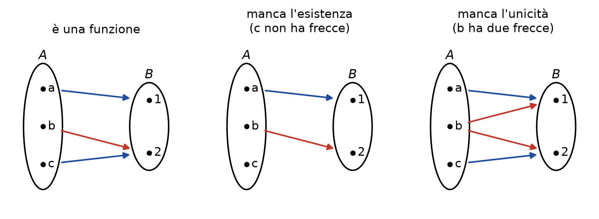
Esistenza e unicità: la prima è una funzione, le altre due no.
10. Funzioni: Definizione, Rappresentazioni e Uguaglianza
Dare una funzione significa dare tre oggetti
Come visto nel capitolo 9, una funzione (o applicazione) ha un dominio A, un codominio B e un grafico Γ ⊆ A × B con la condizione di esistenza e unicità ∀ a ∈ A, ∃! b ∈ B tale che (a, b) ∈ Γ; dare una funzione significa dare la tripla (A, B, Γ). Quando (a, b) ∈ Γ si scrive f(a) = b, e le due scritture sono equivalenti. Lettere come f, g, h sono la scelta abituale per i nomi delle funzioni, ma non c'è alcun obbligo. Va notato che A e B possono anche essere lo stesso insieme: fa parte della definizione e capiterà spesso, con lo stesso insieme che una volta gioca da dominio e una volta da codominio.
Un esempio completo su insiemi piccoli
Prendiamo A = {a, b, c, d} e B = {1, 2, 3}. Il prodotto cartesiano A × B si può disegnare come una piccola scacchiera di 4 × 3 caselle, ciascuna delle quali è una coppia (per esempio una casella rappresenta (c, 2), un'altra (a, 3)). Assegnare un grafico significa scegliere quali caselle appartengono a Γ.
Se segniamo le caselle (a, 2), (b, 2), (c, 3), (d, 1), sopra ogni elemento di A c'è esattamente una casella segnata: Γ definisce una funzione, con f(a) = 2, f(b) = 2, f(c) = 3, f(d) = 1. Si noti che 2 compare due volte come valore, e non è un problema: la definizione chiede un solo valore per ogni elemento del dominio, non valori diversi.
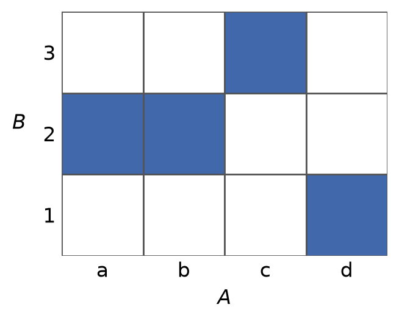
Il grafico Γ come caselle segnate nella scacchiera A × B: una casella per ogni elemento di A.
Differenza rispetto alla funzione di analisi
Chi è abituato alle funzioni reali di variabile reale parte sempre dal calcolare il dominio come insieme dei punti in cui l'espressione ha senso (denominatore diverso da zero, radicando maggiore o uguale a zero e così via). Qui questo passo non esiste: il dominio viene assegnato insieme alla funzione, e si richiede che il valore f(a) esista per ogni a del dominio scelto. Dire "f(a) = b" deve essere sempre possibile, qualunque sia a ∈ A.
Un esempio tipico: 1/x non definisce una funzione da ℝ in ℝ, perché in 0 non è definita; è una funzione da ℝ ∖ {0} in ℝ. Per averne una definita su tutto ℝ bisognerebbe assegnare comunque un valore in 0, e questo cambierebbe la funzione.
Le notazioni a freccia
Una funzione si scrive quasi sempre f : A → B (f definita in A ha valori in B), che dice in un colpo solo dominio e codominio. Il nome si può anche mettere sopra la freccia, A →(f) B: è comodo quando si hanno più funzioni nello stesso diagramma, per esempio due funzioni f e g entrambe da A in B. Per questo motivo si parla spesso di freccia (o di mappa) per indicare una funzione.
Per descrivere il singolo elemento si usa la freccia con il trattino, x ↦ f(x), che si legge "x va in f(x)": per esempio n ↦ an associa a ogni naturale n un numero reale.
Quando due funzioni sono uguali
Dare una funzione significa dare tutti e tre gli oggetti (A, B, Γ), quindi f = (A, B, Γ) e g = (A′, B′, Γ′) sono uguali se e solo se coincidono tutti e tre: A = A′, B = B′ e Γ = Γ′. Non basta avere la stessa espressione, e non basta nemmeno avere gli stessi valori: servono anche lo stesso dominio e lo stesso codominio.
In parole povere: due funzioni sono uguali solo se hanno lo stesso dominio, lo stesso codominio e gli stessi valori in ogni punto. Basta cambiare l'insieme di partenza o di arrivo per avere una funzione diversa, anche se la formula è identica.
Un esempio fa vedere l'effetto contrario. Sull'insieme {0, 1, 2} (con codominio ℝ) consideriamo f(x) = 3x² − 1 e g(x) = x³ + 2x − 1. Le due espressioni sono diverse, ma:
f(0) = −1 e g(0) = −1;
f(1) = 2 e g(1) = 2;
f(2) = 11 e g(2) = 8 + 4 − 1 = 11.
Hanno lo stesso dominio, lo stesso codominio e lo stesso grafico, quindi f = g pur essendo scritte con espressioni diverse. A lezione è stato accennato che fenomeni di questo tipo si incontrano nello studio dei campi finiti in crittografia.
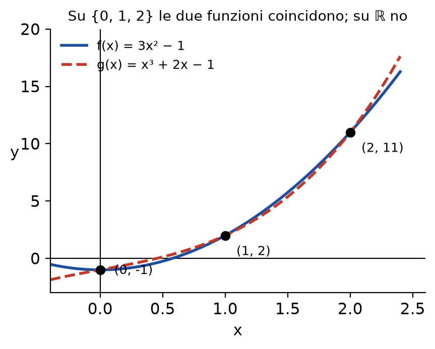
f e g hanno lo stesso grafico su {0, 1, 2} ma sono diverse su ℝ.
Trabocchetto d'esame: assegnare una funzione dando solo un'espressione da calcolare non è abbastanza preciso. Se si vogliono studiare proprietà come iniettività e suriettività bisogna sempre specificare dominio e codominio, perché cambiandoli la stessa espressione può dare funzioni con proprietà diverse (lo vedremo nel capitolo 14).
Dopo l'uguaglianza vediamo le funzioni che compaiono di continuo, e due costruzioni elementari: successioni e restrizioni.
11. Funzioni Notevoli, Successioni e Restrizione
Le funzioni che ricorrono sempre
Esiste un piccolo elenco di funzioni standard che conviene conoscere, perché compaiono continuamente, spesso in modo implicito. Per definirle indichiamo a parole come si comporta il valore invece di scrivere esplicitamente il grafico Γ, che sarebbe macchinoso: è però importante ricordare che dietro c'è sempre la tripla (A, B, Γ).
Funzione identità
Per ogni insieme A, la funzione identità idA : A → A è definita da idA(a) = a per ogni a ∈ A. Il pedice A serve perché l'identità esiste per qualunque insieme. Nell'immagine della scatola è quella che restituisce l'oggetto in entrata tale e quale, senza fargli nulla. Il suo grafico è la diagonale Δ = {(a, a) | a ∈ A}.
In parole povere: la funzione identità lascia tutto com'è, ogni elemento viene mandato in sé stesso. Esiste una identità per ogni insieme.
es: f(a) = a
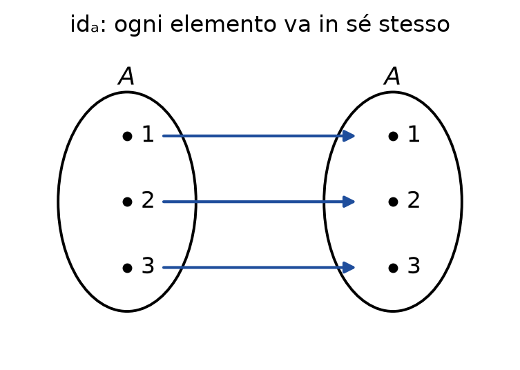
La funzione identità: ogni elemento resta dov'è.
Funzione costante
Si scelgono due insiemi A e B e un elemento β ∈ B fissato. La funzione costante fβ : A → B è definita da fβ(a) = β per ogni a ∈ A: qualunque cosa si inserisca nella scatola, esce sempre β. Per le funzioni numeriche il grafico è una retta orizzontale.
In parole povere: la funzione costante manda tutti gli elementi dello stesso valore fissato, come una macchina che qualunque cosa le dai risponde sempre con la stessa cosa.
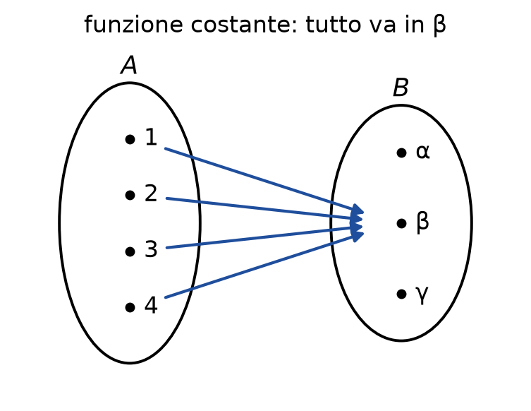
Una funzione costante: tutti gli elementi vanno nello stesso punto.
Proiezioni
Dati A e B, sul prodotto cartesiano A × B si definiscono due funzioni:
la prima proiezione p1 : A × B → A, con p1(a, b) = a (restituisce la prima componente della coppia);
la seconda proiezione p2 : A × B → B, con p2(a, b) = b (restituisce la seconda componente).
In parole povere: una proiezione, data una coppia, ne restituisce una sola componente: la prima proiezione dà il primo elemento, la seconda il secondo. Esempio: dalla coppia (3, 7) la prima dà 3 e la seconda dà 7.
Il nome viene dal piano cartesiano: p1 proietta il punto di coordinate (a, b) sull'asse delle ascisse, p2 sull'asse delle ordinate. Con un prodotto di più insiemi A × B × C si hanno anche la terza proiezione, la quarta e così via: in generale, per le n-uple, restituiscono una coordinata fissata, come le componenti di un vettore.
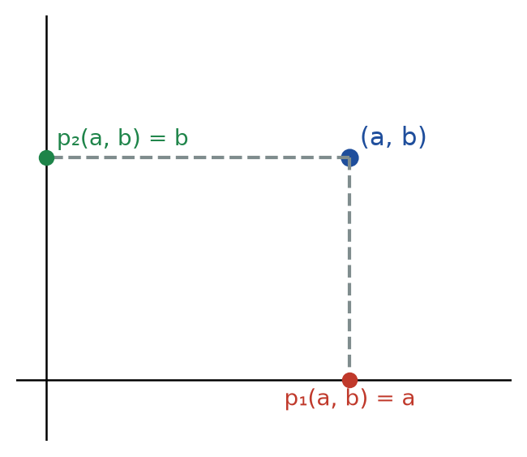
Le proiezioni dal piano sugli assi.
Inclusione canonica
Se S ⊆ A, l'inclusione canonica j : S → A è definita da j(s) = s per ogni s ∈ S. Manda ogni s in sé stesso; se S = A coincide con idA.
In parole povere: l'inclusione canonica prende gli elementi di un sottoinsieme e li vede come elementi dell'insieme più grande, senza cambiarli. È come dire «uno studente di Informatica è anche uno studente dell'università».
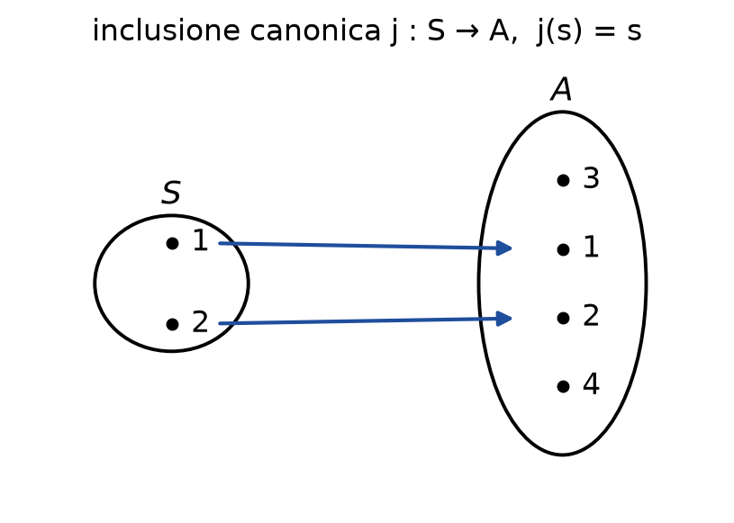
Inclusione canonica j : S → A: ogni elemento di S va in sé stesso, visto come elemento di A.
La funzione quoziente
Se ∼ è una relazione di equivalenza su X e Q = X/∼ è l'insieme quoziente, la funzione quoziente q : X → Q associa a ogni elemento la sua classe, q(x) = [x]. È suriettiva (ogni classe è la classe di un suo elemento) e q(x) = q(y) se e solo se x ∼ y: due elementi hanno la stessa immagine proprio quando sono equivalenti. Per una partizione, q manda ogni elemento nel blocco che lo contiene.
In parole povere: la funzione quoziente a ogni elemento associa la sua classe, cioè dice «tu appartieni a questa squadra». Elementi equivalenti finiscono nella stessa classe.
Le successioni come funzioni
Una successione è una lista di numeri a0, a1, a2, … (si può partire da 0 o da 1, è irrilevante). Assegnare una successione di numeri reali significa assegnare un valore reale a 0, uno a 1, uno a 2 e così via, cioè definire una funzione
a : ℕ → ℝ, n ↦ an.
Dunque una successione non è altro che una funzione con dominio ℕ e codominio ℝ. Un esempio di successione è quella di Fibonacci.
In parole povere: una successione è una lista infinita di numeri in cui ogni posto 0, 1, 2, ... ha il suo valore. Quindi è una funzione che a ogni numero naturale n associa il numero reale che sta al posto n. Esempio: la successione 1, 1, 2, 3, 5, ... di Fibonacci.
Una precisazione: se la successione parte da 0 il dominio è ℕ, se parte da 1 il dominio è ℕ≥1 = {1, 2, 3, …}. Formalmente sono funzioni diverse, perché cambia il dominio, anche se la lista dei valori è la stessa a meno di uno spostamento di indice; in entrambi i casi si parla di successione.
La restrizione di una funzione
Sia f : A → B una funzione e sia S ⊆ A un sottoinsieme del dominio. Poiché gli elementi di S sono particolari elementi di A, f assume un valore anche su di essi. Possiamo allora definire una nuova funzione f|S : S → B, la restrizione di f a S, con la stessa regola di prima: f|S(s) = f(s) per ogni s ∈ S.
In parole povere: la restrizione è la stessa funzione usata solo su una parte del dominio: si guardano soltanto gli ingressi di S e si ignorano gli altri. Le regole non cambiano, ma essendo il dominio più piccolo la funzione tecnicamente è un'altra.
Si sta restringendo il dominio, lasciando invariati i valori; ma dal punto di vista concettuale f|S è una funzione diversa da f, perché ha un dominio diverso (si ricordi il criterio di uguaglianza del capitolo 10).
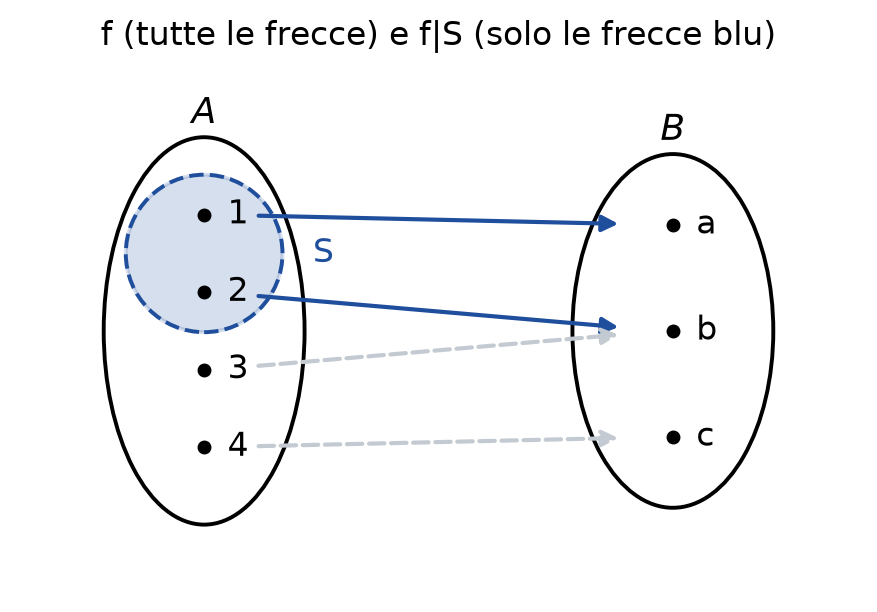
La restrizione f|S: stesse regole di f, ma il dominio è solo S (frecce blu).
Funzioni diverse con restrizioni uguali
Non è vero che due funzioni diverse restano diverse dopo la restrizione. Riprendiamo l'esempio del capitolo 10: le espressioni f(x) = 3x² − 1 e g(x) = x³ + 2x − 1 sono definite per ogni numero reale e, come funzioni su ℝ, sono diverse (hanno grafici diversi). Se però le restringiamo a S = {0, 1, 2}, diventano uguali: f|S = g|S.
Lo stesso accade graficamente con due funzioni reali i cui grafici coincidono solo su un intervallo [a, b]: sono diverse su ℝ, ma se le restringiamo a S = [a, b] si ottengono due funzioni uguali. Non è detto che succeda: è una possibilità, e vedremo più avanti perché a volte conviene restringere il dominio apposta.
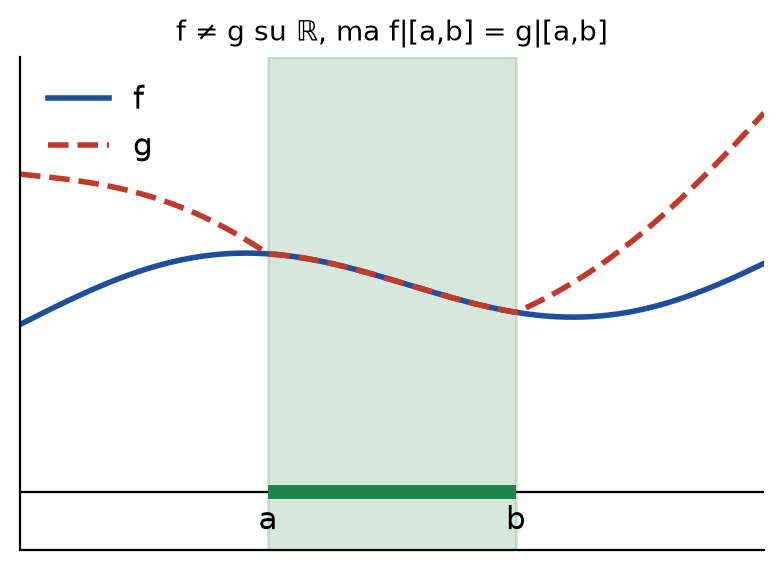
Funzioni con grafici diversi ma uguali ristrette a [a, b].
Il prossimo capitolo affronta una questione molto più delicata, che riguarda le funzioni definite su un insieme quoziente.
12. Funzioni sull'Insieme Quoziente e Dipendenza dal Rappresentante
Il problema
Come visto nel capitolo 9, una relazione di equivalenza R su un insieme A divide A in classi di equivalenza e dà l'insieme quoziente Q, i cui elementi sono le classi. Un elemento x ∈ A individua la sua classe, che indichiamo con [x] oppure con x̄ (a volte anche Cx): sono modi alternativi di scrivere la stessa cosa, e le notazioni semplici contano, perché scegliere il simbolismo giusto aiuta a capire.
Questa situazione è molto frequente in matematica e porta a una questione delicata, che a lezione è stata indicata come forse il punto concettualmente più difficile del corso. Supponiamo di voler definire una funzione da Q in Q, cioè di associare a ogni classe un'altra classe, e di farlo dicendo "alla classe di x associo la classe di una certa espressione in x".
Il difetto: molti modi per scrivere la stessa classe
Una classe si può scrivere in tanti modi, uno per ogni suo rappresentante, e nessuno è privilegiato: per esempio, nell'esempio qui sotto [3] = [5] = [7]. Ma una funzione deve assumere un solo valore ben specificato su ciascun elemento del dominio. Se la regola usa il rappresentante scelto, il risultato non deve dipendere dal modo in cui si scrive la classe: altrimenti, scrivendo la stessa classe in due modi, si otterrebbero due valori diversi e non si avrebbe una funzione.
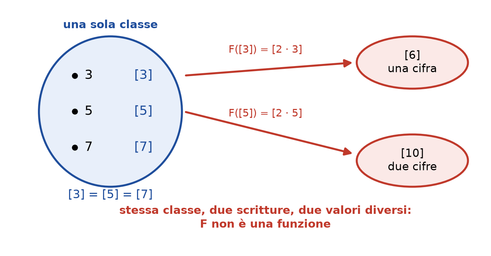
Una classe con tre rappresentanti: scrivendola come [3] oppure come [5] la regola F([x]) = [2x] darebbe due valori diversi.
Un esempio che non funziona
Sia A = ℕ e dividiamolo in classi mettendo insieme i numeri che in notazione decimale hanno lo stesso numero di cifre: {0, …, 9} (una cifra), {10, …, 99} (due cifre), {100, …, 999} (tre cifre) e così via. Allora [3] = {0, …, 9} e [2026] è l'insieme dei numeri con quattro cifre, da 1000 a 9999. Due numeri sono equivalenti quando si scrivono con lo stesso numero di cifre.
Proviamo a definire F : Q → Q con la regola F([x]) = [2x]: alla classe di 2 associo quella di 4, alla classe di 15 quella di 30, e così via. Questa regola non definisce una funzione. Infatti 3 e 8 hanno una cifra, quindi [3] = [8], ma:
F([3]) = [6] (una cifra);
F([8]) = [16] (due cifre).
Dato che [6] ≠ [16], la stessa classe verrebbe mandata in due classi diverse. Il motivo è che 3 ∼ 8 non implica 2·3 ∼ 2·8: raddoppiare non rispetta l'equivalenza.
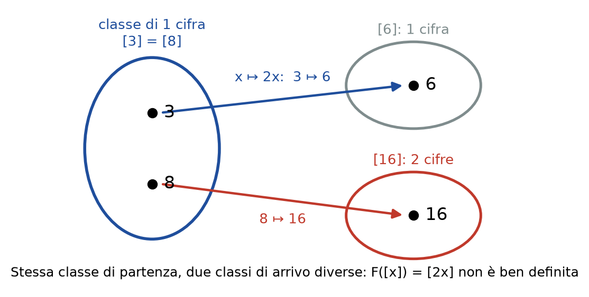
La regola F([x]) = [2x] manda la stessa classe in due classi diverse.
Un esempio in cui la regola funziona. Sia ℤ diviso in pari e dispari, Q = {2ℤ, 2ℤ + 1} (con 2ℤ l'insieme dei pari e 2ℤ + 1 quello dei dispari), e si definisca G : Q → {−1, 1} con la regola G([x]) = (−1)x. Se x ∼ y, cioè x e y hanno la stessa parità, allora (−1)x = (−1)y: il risultato dipende solo dalla classe e non dal rappresentante, quindi G è ben definita (vale 1 sui pari e −1 sui dispari). La differenza con F([x]) = [2x] sta tutta qui.
Che cosa bisogna verificare
Quando si definisce una funzione su un insieme quoziente tramite i rappresentanti bisogna sempre controllare che la regola sia ben definita (termine usuale): se x ∼ y, la regola deve dare lo stesso risultato su x e su y, cioè la classe di arrivo non deve cambiare cambiando rappresentante. Il tema tornerà verso la fine del corso con casi concreti, dove la verifica diventa un vero problema da risolvere.
In parole povere: una regola sulle classi è «ben definita» se il risultato non dipende da quale rappresentante della classe scegli per calcolarlo. Se due numeri stanno nella stessa classe, la regola deve dare la stessa risposta con l'uno e con l'altro. Esempio: «pari → 1, dispari → −1» funziona qualunque pari tu prenda; «il doppio, contato in cifre» no, perché 3 e 8 stanno nella stessa classe ma i loro doppi (6 e 16) no.
Come sottolineato a lezione: quando una funzione è definita "sulla classe di x" tramite una formula in x, la prima domanda è sempre se il risultato dipende dal rappresentante.
13. Immagine e Controimmagine
L'immagine di un elemento e di un sottoinsieme
Sia f : A → B una funzione e a ∈ A. Il valore b = f(a) si chiama immagine di a. Il termine non indica necessariamente un numero: è un elemento del codominio, qualunque sia la natura degli insiemi. Per la funzione "quadrato", per esempio, 4 è l'immagine di 2 e 9 è l'immagine di 3.
In parole povere: l'immagine di un elemento è semplicemente il risultato che la funzione ti restituisce quando le dai quell'elemento. Se la funzione è «raddoppia», l'immagine di 5 è 10. Non deve per forza essere un numero: può essere qualsiasi cosa che sta nell'insieme di arrivo.
La nozione si estende ai sottoinsiemi. Se S ⊆ A, si calcola f su tutti gli elementi di S e si ottiene
f(S) = {f(s) | s ∈ S} = {b ∈ B | ∃ s ∈ S tale che f(s) = b} ⊆ B,
cioè un sottoinsieme del codominio, non di S. Questo insieme è l'immagine di S. Nel caso S = A si ottiene f(A), detta immagine (totale) della funzione e indicata anche con Im(f).
In parole povere: l'immagine di un sottoinsieme è la raccolta di tutti i risultati che escono se dai alla funzione, uno per uno, gli elementi di quel sottoinsieme. È un insieme dell'arrivo, non della partenza. Esempio: con la funzione «raddoppia» e S = {1, 2, 3}, l'immagine è {2, 4, 6}.
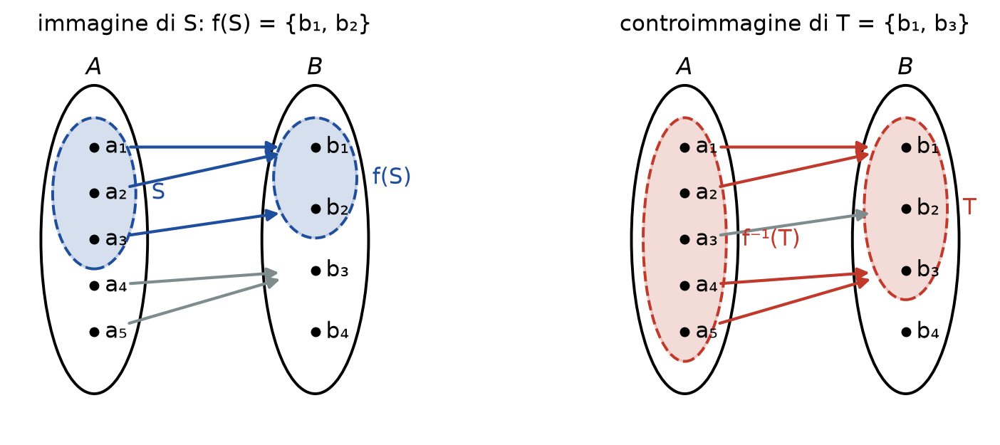
A sinistra l'immagine di un sottoinsieme S, a destra la controimmagine di T.
La controimmagine
Si può percorrere la strada inversa: partire dal codominio e chiedersi quali elementi del dominio finiscono lì. Per un sottoinsieme T ⊆ B si definisce la controimmagine (o immagine inversa)
f-1(T) = {a ∈ A | f(a) ∈ T} ⊆ A.
In parole povere: la controimmagine fa il percorso al contrario: scegli alcuni elementi dell'insieme di arrivo e raccogli tutti gli elementi di partenza che la funzione manda proprio lì. Esempio: con la funzione «quadrato» sui numeri interi, la controimmagine di {4} è {−2, 2}. Se nessuno arriva lì, la controimmagine è l'insieme vuoto.
Se T = {b} ha un solo elemento si scrive f-1(b) = {a ∈ A | f(a) = b}, detta fibra di b. Attenzione alla notazione: f-1(T) esiste per qualunque funzione e non significa che f sia invertibile (l'inversa si vedrà nel capitolo 15).
In parole povere: la fibra di un elemento b dell'arrivo è il «gruppo di quelli che finiscono in b», cioè la controimmagine di b da solo. Come i compagni di classe che prendono tutti lo stesso autobus: la fibra è l'insieme dei passeggeri di quell'autobus.
La differenza fondamentale
Un singolo elemento del dominio ha un'unica immagine, perché una funzione assume un valore e uno solo su ogni elemento. Un singolo elemento del codominio, invece, può avere tanti elementi che lo hanno per immagine. Per questo la controimmagine di un elemento è un sottoinsieme di A, non un elemento di A. La scrittura f-1(b) va sempre letta come un insieme.
Due proprietà legate a questo fatto vanno ricordate bene:
se S ≠ ∅, allora f(S) ≠ ∅: l'immagine di un insieme non vuoto non è mai vuota;
al contrario, f-1(T) può essere vuota anche se T ≠ ∅, se nessun elemento di A viene mandato in T.
Poter avere l'insieme vuoto come risultato evita casi particolari: la controimmagine è sempre definita.
Esempio: la parabola f(x) = x²
Sia f : ℝ → ℝ, f(x) = x². Il grafico è una parabola con vertice nell'origine. Per l'immagine si prende un punto sull'asse x, si guarda il grafico e si proietta sull'asse y. Per la controimmagine si fa il contrario: si parte da un punto b del codominio, si traccia la retta orizzontale e si proiettano sull'asse x i punti in cui incontra il grafico. Tre casi:
se b > 0: f-1(b) = {−√b, √b}, due elementi;
se b = 0: f-1(0) = {0}, un solo elemento;
se b < 0: f-1(b) = ∅, perché nessun numero reale ha quadrato negativo.
Anche per i sottoinsiemi il ragionamento regge. Per T = [0, 4]: x² ∈ [0, 4] equivale a −2 ≤ x ≤ 2, quindi f-1([0, 4]) = [−2, 2]. Per T = [−1, 4] il risultato è lo stesso, [−2, 2]: la parte [−1, 0) del sottoinsieme non viene mai raggiunta dalla funzione, perché i quadrati sono sempre non negativi, quindi non aggiunge nulla.
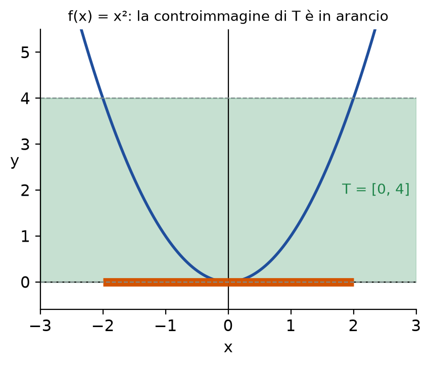
La controimmagine di T = [0, 4] tramite x² è [−2, 2].
Altri esempi di controimmagine. Per la funzione costante fβ : A → B, la controimmagine fβ-1(T) è tutto A se β ∈ T ed è ∅ altrimenti. Per la seconda proiezione p₂ : A × B → B si ha p₂-1(T) = A × T. Per il valore assoluto |x| da ℝ in ℝ, la fibra di b > 0 è {−b, b}, la fibra di 0 è {0}, e la controimmagine di [0, 4] è [−4, 4].
Calcolare immagini e controimmagini
Calcolare un'immagine, quando si ha un'espressione, significa sostituire il valore nell'espressione. Calcolare una controimmagine è più difficile: bisogna risolvere l'equazione f(x) = y nell'incognita x, e in certi casi risolverla può essere impossibile da fare esplicitamente. Il caso è concettualmente più difficile anche quando le funzioni non sono numeriche: se a ogni persona di un gruppo associamo la sua altezza in centimetri, la controimmagine di 170 è il sottoinsieme delle persone del gruppo alte esattamente 170 cm, che può avere molti elementi, uno solo o nessuno.
Con queste due nozioni possiamo classificare le funzioni in base a come "coprono" il codominio e a come si comportano su elementi distinti.
14. Funzioni Suriettive, Iniettive e Biettive
Suriettività
Una funzione f : A → B è suriettiva se la sua immagine totale è tutto il codominio, cioè se f(A) = B: ogni elemento di B è raggiungibile dalla funzione partendo da qualche elemento del dominio. Si può scrivere in modi equivalenti:
∀ b ∈ B, ∃ a ∈ A tale che f(a) = b;
∀ b ∈ B, f-1(b) ≠ ∅: ogni elemento del codominio ha almeno una controimmagine.
In parole povere: suriettiva vuol dire che nessun elemento dell'arrivo resta senza visite: ogni elemento del codominio è il risultato di almeno un elemento di partenza. Se immagini le frecce che vanno dal dominio al codominio, in ogni elemento di arrivo ne entra almeno una. Esempio: «x diventa 2x» da numeri reali a numeri reali è suriettiva, perché ogni numero y si ottiene da x = y/2.
Iniettività
Una funzione f è iniettiva se elementi distinti del dominio hanno immagini distinte:
∀ a₁, a₂ ∈ A, a₁ ≠ a₂ ⟹ f(a₁) ≠ f(a₂).
In termini di controimmagini: ∀ b ∈ B, |f-1(b)| ≤ 1, cioè nessun elemento del codominio viene raggiunto da due elementi diversi del dominio. Nel disegno con le frecce, f non è iniettiva quando due frecce partenti da punti diversi arrivano nello stesso punto.
In parole povere: iniettiva vuol dire che due elementi diversi di partenza non finiscono mai nello stesso elemento di arrivo: nessun elemento dell'arrivo riceve due frecce. È come una fila di persone con un posto a sedere ciascuna: nessuno condivide la sedia. Esempio: «x diventa x + 1» è iniettiva; «x diventa x al quadrato» sui reali no, perché −2 e 2 vanno entrambi in 4.
Per dimostrare che f non è iniettiva basta mostrare che esistono due elementi diversi del dominio con la stessa immagine: negando la proposizione, il suo contrario è "esistono a₁ ≠ a₂ con f(a₁) = f(a₂)". Un controesempio basta.
Biettività
f è biettiva (o corrispondenza biunivoca) se è sia iniettiva sia suriettiva, cioè ∀ b ∈ B, |f-1(b)| = 1: ogni elemento del codominio ha esattamente una controimmagine. Equivalentemente, ∀ b ∈ B ∃! a ∈ A con f(a) = b.
In parole povere: biettiva significa «perfetto accoppiamento»: ogni elemento di partenza ha il suo partner nell'arrivo e ogni elemento di arrivo ha un solo partner, senza avanzi né doppioni. È come far ballare tutti con tutti a coppie, senza che nessuno resti solo o faccia coppia con due persone.
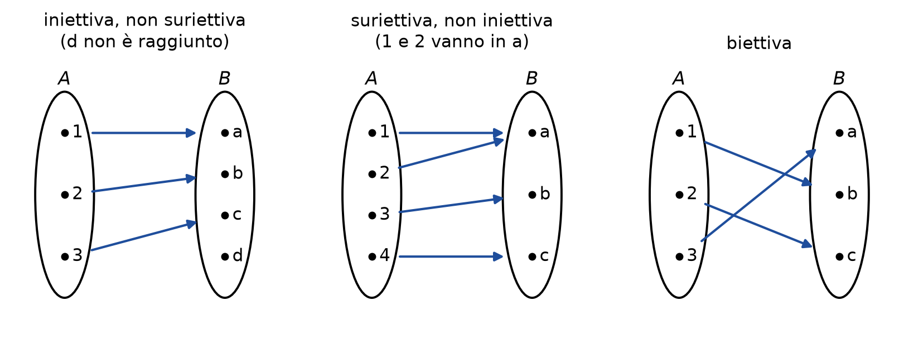
Le tre situazioni: iniettiva, suriettiva, biettiva.
Il criterio con le controimmagini si dimostra subito: f non è iniettiva se e solo se esiste b ∈ B con |f-1(b)| ≥ 2. Se f non è iniettiva ci sono a₁ ≠ a₂ con f(a₁) = f(a₂) = b, quindi a₁ e a₂ stanno entrambi in f-1(b); viceversa due elementi distinti di f-1(b) hanno la stessa immagine b. Un altro esempio di funzione biettiva è lo scambio A × B → B × A, (a, b) ↦ (b, a), la cui inversa è (b, a) ↦ (a, b). Il logaritmo log : ℝ>0 → ℝ è suriettivo (e iniettivo), mentre la funzione esponenziale da ℝ in ℝ non è suriettiva perché non assume valori minori o uguali a 0.
Il ruolo di dominio e codominio
Prendiamo f(x) = x². Come funzione ℝ → ℝ:
non è iniettiva, perché f(−1) = f(1) = 1 pur essendo −1 ≠ 1;
non è suriettiva, perché i numeri negativi non hanno controimmagine (per esempio f-1(−4) = ∅) e quindi Im(f) = [0, +∞) ≠ ℝ.
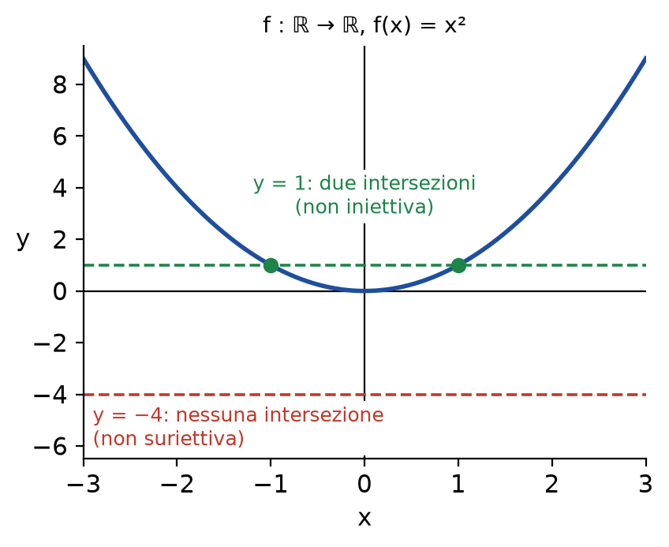
Con f(x) = x² su ℝ: nessuna intersezione per y = −4, due per y = 1.
Se cambiamo il codominio e consideriamo g : ℝ → [0, +∞), g(x) = x², la funzione diventa suriettiva: i numeri negativi non sono più nel codominio e ogni numero non negativo è un quadrato. Se restringiamo anche il dominio a [0, +∞), cioè q : [0, +∞) → [0, +∞), q(x) = x², diventa biettiva. L'espressione è sempre la stessa, ma abbiamo cambiato uno dei tre ingredienti: la funzione è diversa, e infatti ha una proprietà che l'altra non ha.
Altri esempi
h : ℤ → ℤ, h(n) = 2n + 1 è iniettiva: da 2n₁ + 1 = 2n₂ + 1 segue 2n₁ = 2n₂ e quindi n₁ = n₂. Non è suriettiva: l'immagine è l'insieme dei numeri dispari e i pari non hanno controimmagine in ℤ.
k : ℝ → ℝ, k(x) = x³ è biettiva: ogni numero reale ha un'unica radice cubica reale.
Come sottolineato a lezione: prima di dire se una funzione è iniettiva o suriettiva bisogna leggere con cura dominio e codominio: la stessa espressione può essere suriettiva o no a seconda dell'insieme di arrivo, e iniettiva o no a seconda dell'insieme di partenza.
Con queste proprietà possiamo parlare di funzioni composte e di funzioni inverse.
15. Composizione e Invertibilità
La funzione composta
Siano f : A → B e g : B → C due funzioni, in modo che il codominio di f coincida con il dominio di g. La composizione è la funzione g ∘ f : A → C definita da
(g ∘ f)(a) = g(f(a)) per ogni a ∈ A.
Prima si applica f, poi g: la scrittura va letta da destra a sinistra.
In parole povere: comporre due funzioni vuol dire metterle in catena, come due macchine in fila: il risultato della prima diventa l'ingresso della seconda. Si può fare solo se quello che esce dalla prima è qualcosa che la seconda sa accettare. Esempio: «raddoppia» e poi «aggiungi 1» fa passare da 3 a 7.
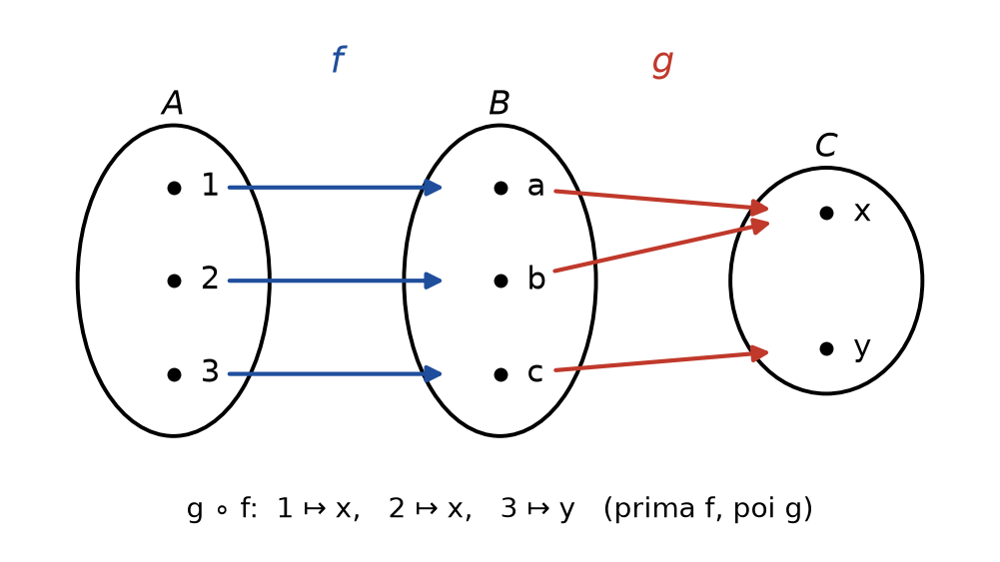
La composizione: si applica prima f e poi g.
Proprietà:
associatività: se h : C → D, allora h ∘ (g ∘ f) = (h ∘ g) ∘ f;
elemento neutro: f ∘ idA = f e idB ∘ f = f;
non commutatività: in generale g ∘ f ≠ f ∘ g, e spesso f ∘ g non è nemmeno definibile.
Un esempio: con f(x) = x² e g(x) = x + 1 da ℝ in ℝ si ha (g ∘ f)(x) = x² + 1, mentre (f ∘ g)(x) = (x + 1)² = x² + 2x + 1, che sono funzioni diverse.
Funzione invertibile
Una funzione f : A → B è invertibile se esiste g : B → A tale che g ∘ f = idA e f ∘ g = idB. Vale il teorema fondamentale:
In parole povere: una funzione è invertibile se esiste una funzione «di ritorno» che annulla esattamente quello che la prima ha fatto, in entrambe le direzioni: se vai e poi torni ti ritrovi al punto di partenza, e lo stesso se torni e poi vai. Esempio: «aggiungi 3» e «togli 3».
f è invertibile se e solo se f è biettiva.
Se f è biettiva, la funzione g è unica; si chiama funzione inversa, si indica con f-1 : B → A ed è definita da f-1(b) = a ⟺ f(a) = b. Per esempio k(x) = x³ da ℝ in ℝ è biettiva e la sua inversa è k-1(x) = ∛x, mentre h(n) = 2n + 1 da ℤ in ℤ non è biettiva (non è suriettiva), quindi non è invertibile.
In parole povere: la funzione inversa è quella «macchina al contrario»: se f manda a in b, l'inversa manda b di nuovo in a. Per ogni funzione che si può invertire ce n'è una sola. Esempio: l'inversa di «prendi il cubo» è «prendi la radice cubica».
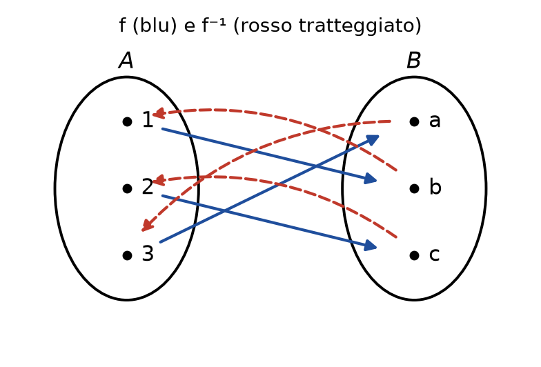
Una funzione biettiva e la sua inversa: le frecce si invertono.
Non va confusa la funzione inversa f-1 (che esiste solo se f è biettiva) con la controimmagine f-1(T) del capitolo 13, che si può calcolare per qualunque funzione.
16. Verificare Iniettività e Suriettività: Esempi
Due condizioni indipendenti
Per le definizioni di funzione iniettiva, suriettiva e biettiva si veda il capitolo 14. Le due condizioni sono indipendenti: una funzione può non essere né iniettiva né suriettiva, può essere solo suriettiva, solo iniettiva oppure entrambe. Nell'ultimo caso è biettiva.
Vediamo alcuni esempi, dal più semplice al più istruttivo.
L'identità è biettiva
Per idA : A → A, idA(a) = a, l'iniettività è immediata: se a ≠ a′ allora idA(a) = a è diverso da idA(a′) = a′. La suriettività è altrettanto semplice: ogni elemento a del codominio è immagine di sé stesso. Le uguaglianze si leggono in entrambi i versi: da sinistra a destra è la definizione di identità, da destra a sinistra dice che ogni elemento si scrive come immagine di qualcosa, cioè di sé stesso.
La proiezione: suriettiva ma (in generale) non iniettiva
Consideriamo la prima proiezione p1 : A × B → A, p1(a, b) = a, con B non vuoto.
Non è iniettiva. Iniettiva vorrebbe dire: se (a, b) ≠ (a′, b′) allora a ≠ a′. Ma due coppie sono uguali solo se coincidono entrambe le componenti, quindi sono diverse anche quando ne differisce una sola. Per esempio (1, 2) ≠ (1, 5) come coppie, eppure hanno la stessa prima componente e quindi la stessa immagine. Nel piano cartesiano sono due punti sulla stessa retta verticale, che la proiezione manda nello stesso punto dell'asse delle ascisse.
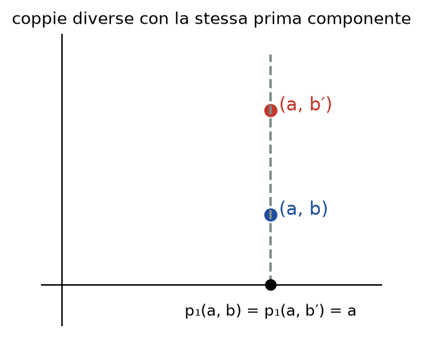
La proiezione non è iniettiva: (a, b) e (a, b′) hanno la stessa immagine.
È suriettiva. Dato a ∈ A basta scegliere un qualsiasi elemento b ∈ B: la coppia (a, b) ha immagine a. Qui serve che B non sia vuoto (precisazione); l'elemento scelto in B è irrilevante, perché la proiezione lo ignora. Tutta la retta verticale sopra a viene mandata in a.
Esiste un solo caso in cui p1 diventa iniettiva: quando B ha un solo elemento. Allora non si possono scegliere due elementi diversi di B, quindi due coppie diverse differiscono necessariamente nella prima componente. A parte questo caso eccezionale, la proiezione è suriettiva ma non iniettiva.
La funzione affine f(x) = ax + b su ℝ
Sia f : ℝ → ℝ, f(x) = ax + b, con a e b costanti e a ≠ 0. Graficamente è una retta, ma per esercizio la studiamo per via algebrica.
Iniettività. Si prendono due numeri x e y e si suppone che abbiano la stessa immagine, cioè ax + b = ay + b. Sottraendo b da entrambi i membri resta ax = ay; poiché a ≠ 0 si può dividere per a e si ottiene x = y. Dunque se due numeri hanno la stessa immagine sono lo stesso numero, e di conseguenza due numeri diversi hanno immagini diverse: f è iniettiva.
Suriettività. La verifica si traduce sempre nel risolvere un'equazione. Dato y ∈ ℝ ci chiediamo se esiste x ∈ ℝ con f(x) = y, cioè con ax + b = y. L'incognita è x, e isolandola si ottiene x = (1/a)(y − b). Qualunque sia y questa espressione dà un x tale che f(x) = y, quindi f è suriettiva, e quindi biettiva.
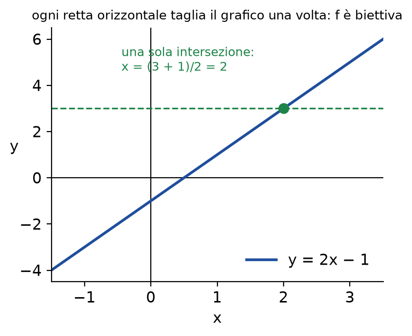
La retta y = 2x − 1: ogni retta orizzontale la taglia una volta.
Gli stessi calcoli su ℤ: la suriettività cade
Se a e b sono interi, la stessa espressione definisce una funzione f : ℤ → ℤ. È un'altra funzione, perché cambiano dominio e codominio. Che cosa resta valido? L'iniettività sì: le semplificazioni usate (sottrarre b, dividere per a ≠ 0) sono ancora lecite. La suriettività invece no: nella formula x = (1/a)(y − b) la divisione per a può portare fuori dagli interi.
Esempio: f(x) = 2x + 1. Esiste un x intero con f(x) = 2? Dalla formula x = (1/2)(2 − 1) = 1/2, che non è un intero, quindi 2 non è nell'immagine. In realtà un intero moltiplicato per 2 è pari e sommando 1 si ottiene sempre un numero dispari: i numeri pari non compaiono mai nell'immagine, e la funzione non è suriettiva. (Precisazione: per a = ±1 la divisione per a non porta fuori dagli interi e la funzione resta biettiva.)
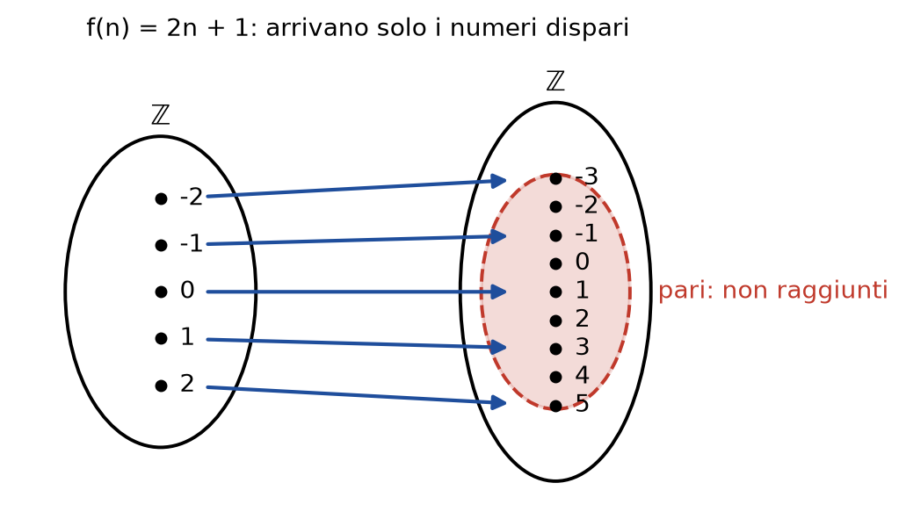
f(n) = 2n + 1 su ℤ: i numeri pari non vengono mai raggiunti.
Il prossimo capitolo mostra come si rimedia a questa situazione cambiando dominio e codominio.
17. Rendere Biettiva una Funzione: Cambiare Codominio e Dominio
L'idea generale
Una funzione definita da un'espressione può non essere né iniettiva né suriettiva, ma spesso si può ritoccare la funzione, cambiando l'insieme di arrivo e quello di partenza, fino a ottenerne una biettiva. Si procede in due passi: prima si riduce il codominio a ciò che la funzione raggiunge davvero, e la funzione diventa suriettiva; poi si restringe il dominio, scartando alcuni elementi in modo consistente, fino a rendere la funzione iniettiva.
In linea di principio questo si può fare per qualsiasi funzione. Il prezzo è che a ogni passo si ottiene una funzione diversa da quella di partenza (capitolo 10), con le stesse regole di calcolo ma con proprietà diverse.
Esempio: f(x) = x²
Come già visto nel capitolo 14, f : ℝ → ℝ, f(x) = x² non è suriettiva: l'equazione x² = −1 non ha soluzioni, quindi i numeri negativi non sono mai immagine di nulla. Basta trovare un solo elemento fuori dall'immagine per concludere che una funzione non è suriettiva.
Passo 1: ridurre il codominio. Poiché i quadrati sono sempre maggiori o uguali a zero, possiamo pensare f come funzione da ℝ in ℝ≥0 = [0, +∞). Ora è suriettiva: se y ≥ 0, l'equazione x² = y ha soluzione, per esempio x = √y (la radice quadrata esiste sempre per y ≥ 0).
Non è ancora iniettiva: (−1)² = 1² = 1, quindi due numeri diversi come −1 e 1 hanno la stessa immagine, in contrasto con la definizione.
Passo 2: restringere il dominio. Graficamente la mancanza di iniettività si vede dal fatto che ogni valore positivo ha due soluzioni, una positiva e una negativa. Per ottenere l'iniettività bisogna sceglierne una e scartare l'altra; il modo di scegliere deve essere consistente, non a caso. Come sottolineato a lezione, la scelta è convenzionale ma va fatta in modo consistente, non scartando elementi a caso. Una scelta possibile è eliminare tutte le soluzioni negative: S = ℝ≥0, e si considera la restrizione f|S : ℝ≥0 → ℝ≥0. Resta suriettiva (per ogni y ≥ 0 c'è una radice non negativa) e ora è anche iniettiva: è quindi biettiva.
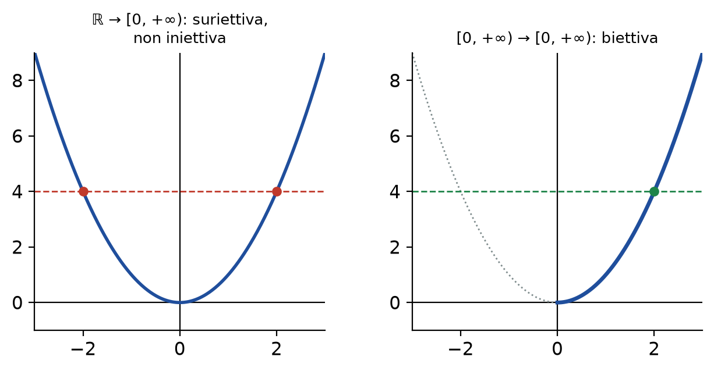
Cambiando codominio e dominio si passa da suriettiva a biettiva.
Esempio: la funzione seno
Il grafico del seno è un'onda periodica.
sen : ℝ → ℝ non è suriettiva (il grafico è tutto contenuto tra −1 e 1, quindi un valore come 2 non viene mai raggiunto) e non è iniettiva (una retta orizzontale a quota tra −1 e 1 incontra la curva in tanti punti: tanti valori di x danno lo stesso valore del seno).
Primo passo, come per x²: il seno assume solo valori in [−1, 1], quindi lo si considera come sen : ℝ → [−1, 1], che è suriettiva.
Secondo passo: serve una scelta, e la più comune è l'intervallo [−π/2, π/2], dove il seno va da −1 a 1. Sulla porzione centrale del grafico una retta orizzontale incontra la curva al più in un punto: sen : [−π/2, π/2] → [−1, 1] è biettiva.
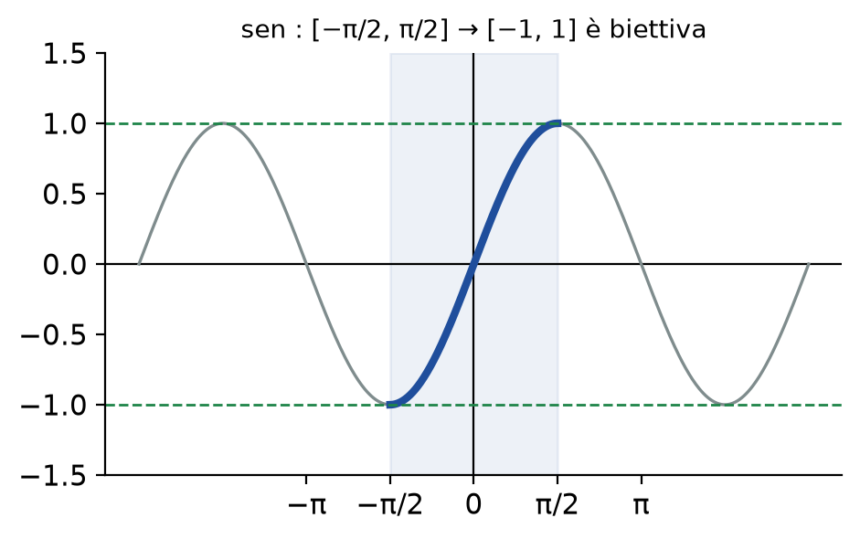
La funzione seno ristretta a [−π/2, π/2] con codominio [−1, 1].
Un discorso analogo si fa per il coseno (che ha lo stesso grafico traslato) e per la tangente. Nella tangente, che ha asintoti, non si prende un intervallo chiuso ma l'intervallo aperto (−π/2, π/2) come dominio e tutta la retta come codominio: la funzione risulta biettiva.
Sono costruzioni che si conoscono già, anche se non in questa forma. Funzioni iniettive e suriettive le incontreremo man mano nel corso.
18. La Composizione di Funzioni: Ordine, Associatività e Identità
Costruire una nuova funzione
Siano f : A → B e g : B → C due funzioni. Dato un elemento a ∈ A possiamo calcolare la sua immagine f(a) ∈ B; questo elemento sta nel dominio di g, quindi possiamo calcolare g(f(a)) ∈ C. Dimenticando il passaggio intermedio abbiamo costruito una funzione con dominio A e codominio C: è la composizione di f e g, indicata con g ∘ f, e vale
(g ∘ f)(a) = g(f(a)).
In parole povere: la funzione composta è una nuova funzione che fa tutto il viaggio in un colpo solo: prende un elemento di partenza, lo passa alla prima funzione e passa il risultato alla seconda. Si scrive con la seconda funzione a sinistra perché è quella che agisce per ultima.
Gli insiemi A, B, C possono essere diversi, ma nulla esclude che alcuni di essi, o tutti, coincidano. La definizione è già nel capitolo 15; qui si vedono le proprietà con le dimostrazioni.
L'ordine di scrittura
Questo è un punto che all'inizio confonde: la funzione che si applica per prima si scrive per seconda. In g ∘ f si calcola prima f e poi g, perché nell'espressione g(f(a)) la funzione più vicina all'elemento a è f. Si legge "g composto f", oppure "g tondino f".
La composizione si può fare solo se c'è concordanza tra il codominio della prima funzione e il dominio della seconda (a lezione si prende il caso in cui coincidono): l'elemento f(a) deve appartenere al dominio di g, altrimenti non sappiamo dove calcolare g.
Più di due funzioni e associatività
Se la situazione lo permette si possono concatenare più funzioni, per esempio f : A → B, g : B → C, h : C → D: si porta a in f(a), poi in g(f(a)), poi in h(g(f(a))). Ma l'operazione di base è sempre tra due funzioni, quindi per scrivere h ∘ g ∘ f senza parentesi bisogna verificare la proprietà associativa:
h ∘ (g ∘ f) = (h ∘ g) ∘ f.
È la stessa esigenza che si ha sommando tre numeri: si sommano due alla volta, e perché la somma sia ben posta il risultato non deve dipendere da quali due si sommano per primi. Due funzioni sono uguali quando hanno stesso dominio, stesso codominio e stesso grafico (capitolo 10). Qui il dominio è A e il codominio è D per entrambe le scritture; resta da controllare che su ogni a ∈ A diano lo stesso valore.
Dimostrazione (passaggi ricostruiti dalla spiegazione a voce). Sia a ∈ A.
1. (h ∘ (g ∘ f))(a) = h((g ∘ f)(a)), perché h ∘ (g ∘ f) è la composizione di g ∘ f (prima funzione) e h (seconda).
2. (g ∘ f)(a) = g(f(a)), quindi il risultato è h(g(f(a))).
3. ((h ∘ g) ∘ f)(a) = (h ∘ g)(f(a)), perché si compone f (prima funzione) con h ∘ g (seconda), calcolata sull'immagine di a tramite f.
4. (h ∘ g)(f(a)) = h(g(f(a))).
I due risultati coincidono per ogni a, quindi le due funzioni sono uguali. L'associatività permette di comporre a coppie come si preferisce, purché si rispetti l'ordine: in generale scambiando l'ordine viene a mancare la concordanza tra codominio della prima e dominio della seconda.
Quando alcuni insiemi coincidono
I casi più interessanti sono quelli in cui gli insiemi coincidono.
Se f : A → B e g : B → A (cioè C = A), la composizione g ∘ f è una funzione da A in A, mentre f ∘ g, che si può fare lo stesso, è una funzione da B in B. Se A ≠ B sono funzioni diverse, perché hanno dominio e codominio diversi.
Se A = B = C, cioè f e g vanno entrambe da A in A, si possono fare sia g ∘ f sia f ∘ g, e sono entrambe funzioni da A in A. Sono la stessa funzione?
La composizione non è commutativa
In generale no. Su ℝ prendiamo f(x) = x² e g(x) = x + 1, entrambe da ℝ in ℝ:
(g ∘ f)(x) = g(f(x)) = x² + 1: prima si eleva al quadrato, poi si somma 1;
(f ∘ g)(x) = f(g(x)) = (x + 1)²: prima si somma 1, poi si eleva al quadrato.
Sono funzioni diverse: per x = 1 la prima dà 2, la seconda dà 4. Anche se la composizione si può fare in entrambi i modi, e le due funzioni hanno stesso dominio e codominio, il risultato dipende dall'ordine.
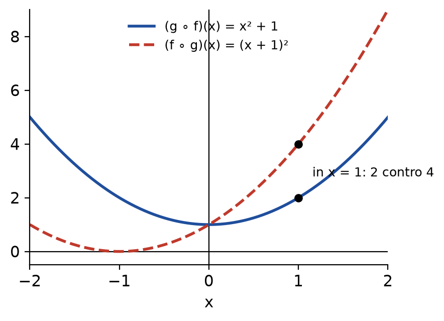
Le due composizioni sono funzioni diverse.
Questo è forse il primo esempio di operazione non commutativa che si incontra: il vecchio detto "l'ordine dei fattori non cambia il prodotto" vale per i numeri, ma non per oggetti di natura diversa come le funzioni. Nel corso di Algebra e Geometria compariranno altri oggetti che si possono moltiplicare ma con un'operazione non commutativa.
L'identità è l'elemento neutro
Sia f : A → B e consideriamo le due composizioni con le identità: f ∘ idA e idB ∘ f. Entrambe hanno dominio A e codominio B, come f. Calcoliamole su a ∈ A:
(f ∘ idA)(a) = f(idA(a)) = f(a), perché l'identità non cambia l'elemento;
(idB ∘ f)(a) = idB(f(a)) = f(a), per lo stesso motivo.
Dunque f ∘ idA = f e idB ∘ f = f: le identità si possono cancellare da una composizione, esattamente come 1 è neutro per la moltiplicazione e 0 per l'addizione. Le funzioni identità sono neutre rispetto alla composizione.
Composizione e funzioni costanti. Sia fβ : A → B la funzione costante di valore β ∈ B e sia g : B → C una funzione qualunque. Allora g ∘ fβ è la funzione costante di valore g(β), cioè g ∘ fβ = fg(β), perché per ogni a si ha g(fβ(a)) = g(β). Se invece si compone con h : D → A, si ha fβ ∘ h = fβ (come funzione da D in B): ogni elemento viene comunque mandato in β.
Resta da capire come si comportano iniettività e suriettività quando si compongono funzioni.
19. Composizione, Iniettività e Suriettività: le Funzioni Inverse
Che cosa si conserva componendo
Se si compongono funzioni di un certo tipo, si ottiene ancora una funzione dello stesso tipo? Per iniettività e suriettività la risposta è sì.
Proposizione 1. Siano f : A → B e g : B → C due funzioni.
Se f e g sono iniettive, allora g ∘ f è iniettiva.
Se f e g sono suriettive, allora g ∘ f è suriettiva.
Dimostrazione (iniettività). Siano a₁ ≠ a₂ in A.
1. Poiché f è iniettiva, f(a₁) ≠ f(a₂).
2. Poiché g è iniettiva e f(a₁), f(a₂) sono due elementi diversi di B, g(f(a₁)) ≠ g(f(a₂)).
3. Quindi (g ∘ f)(a₁) ≠ (g ∘ f)(a₂).
Dimostrazione (suriettività). Bisogna controllare che per ogni y ∈ C esista x ∈ A con (g ∘ f)(x) = g(f(x)) = y.
1. Poiché g è suriettiva, esiste b ∈ B con g(b) = y.
2. Poiché f è suriettiva, esiste x ∈ A con f(x) = b.
3. Allora (g ∘ f)(x) = g(f(x)) = g(b) = y.
Il viceversa: che cosa si deduce da g ∘ f
Se invece si sa qualcosa della composta, si può dedurre qualcosa su una delle due funzioni: l'iniettività sulla prima, la suriettività sulla seconda.
Proposizione 2. Siano f : A → B e g : B → C due funzioni.
Se g ∘ f è iniettiva, allora f è iniettiva.
Se g ∘ f è suriettiva, allora g è suriettiva.
Dimostrazione (iniettività). Si dimostra che se f non è iniettiva allora g ∘ f non può essere iniettiva.
1. Se f non è iniettiva esistono a₁ ≠ a₂ in A con f(a₁) = f(a₂).
2. Applicando g si ottiene g(f(a₁)) = g(f(a₂)), cioè (g ∘ f)(a₁) = (g ∘ f)(a₂).
3. Quindi g ∘ f non è iniettiva.
Dimostrazione (suriettività).
1. Poiché g ∘ f è suriettiva, per ogni y ∈ C esiste x ∈ A con (g ∘ f)(x) = g(f(x)) = y.
2. Posto b = f(x) ∈ B, si ha g(b) = y.
3. Quindi ogni y ∈ C è immagine tramite g di un elemento di B: g è suriettiva.
Conseguenza (∗). Se g ∘ f è biettiva, allora f è iniettiva e g è suriettiva.
Non si può dire di più: con f : {0} → {0, 1}, f(0) = 0 e g : {0, 1} → {0} costante, g ∘ f è biettiva ma g non è iniettiva e f non è suriettiva.
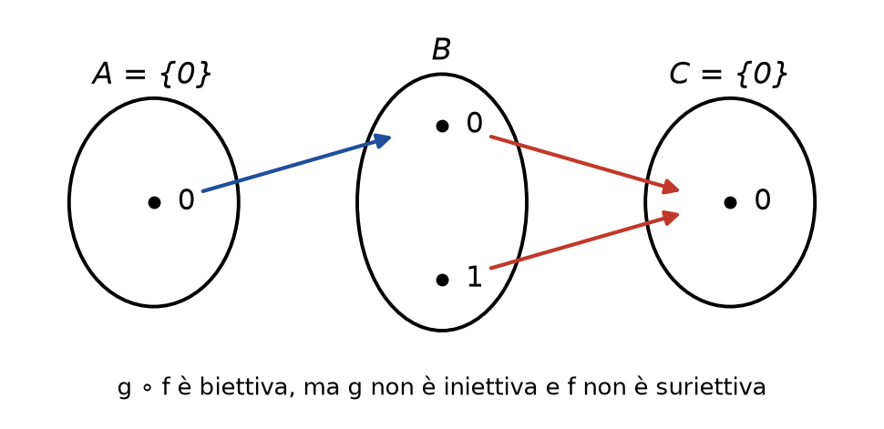
Il controesempio: g ∘ f biettiva senza che f sia suriettiva né g iniettiva.
Le funzioni inverse
Supponiamo di avere due funzioni f : A → B e g : B → A tali che
g ∘ f = idA e f ∘ g = idB.
Applichiamo (∗) a ciascuna delle due uguaglianze:
idA è biettiva, quindi (∗) dà: f è iniettiva e g è suriettiva;
idB è biettiva, quindi (∗) applicata a f ∘ g dà: g è iniettiva (è la funzione che si applica per prima) e f è suriettiva.
Dunque f e g sono entrambe iniettive e suriettive: questa situazione può capitare solo se f e g sono entrambe biettive. Quando capita si dice che f e g sono funzioni inverse l'una dell'altra.
Questo spiega il teorema del capitolo 15: una funzione invertibile è necessariamente biettiva. Il verso opposto (una funzione biettiva è sempre invertibile) è enunciato nel capitolo 15; qui sopra è dimostrata solo la necessità della biettività.
20. Funzioni Inverse: Esistenza e Unicità
Una sola composizione non basta
Due funzioni f : A → B e g : B → A sono una l'inversa dell'altra quando valgono entrambe le uguaglianze g ∘ f = idA e f ∘ g = idB. Non è un dettaglio: può succedere che una delle due composizioni sia l'identità e l'altra no, e allora f e g non sono inverse. Due esempi lo mostrano.
In parole povere: due funzioni sono una l'inversa dell'altra solo se si annullano a vicenda in tutte e due i versi: andata e ritorno ti riportano al punto di partenza, ma anche ritorno e andata. Non basta che funzioni in un verso solo, come una strada che ti riporta a casa solo se parti dal lato giusto.
Esempio 1: la proiezione. Sia π₁ : ℤ × ℤ → ℤ la prima proiezione, π₁(m, n) = m, e sia f : ℤ → ℤ × ℤ la funzione f(n) = (n, 0). Componendo nell'ordine π₁ ∘ f, cioè prima f e poi π₁, si ha (π₁ ∘ f)(n) = π₁(n, 0) = n: è l'identità di ℤ. Nell'ordine opposto, invece, (f ∘ π₁)(m, n) = f(m) = (m, 0), che è diversa dalla coppia (m, n) appena n ≠ 0, quindi f ∘ π₁ non è l'identità di ℤ × ℤ. Era prevedibile: la proiezione non è biettiva, e due funzioni inverse devono esserlo entrambe.
Esempio 2: una partizione. Sia A = {a, b, c, d} con la partizione {a, b}, {c, d}. L'insieme quoziente Q ha due elementi, Q = {{a, b}, {c, d}}. Definiamo f : A → Q mandando ogni elemento nella propria classe (f(a) = f(b) = {a, b}, f(c) = f(d) = {c, d}) e g : Q → A scegliendo un rappresentante per classe: g({a, b}) = a e g({c, d}) = c. Allora g ∘ f manda a e b in a, c e d in c: non è l'identità di A, e non è nemmeno iniettiva. Invece f ∘ g manda {a, b} in a e poi in {a, b}, e {c, d} in c e poi in {c, d}: è l'identità di Q.
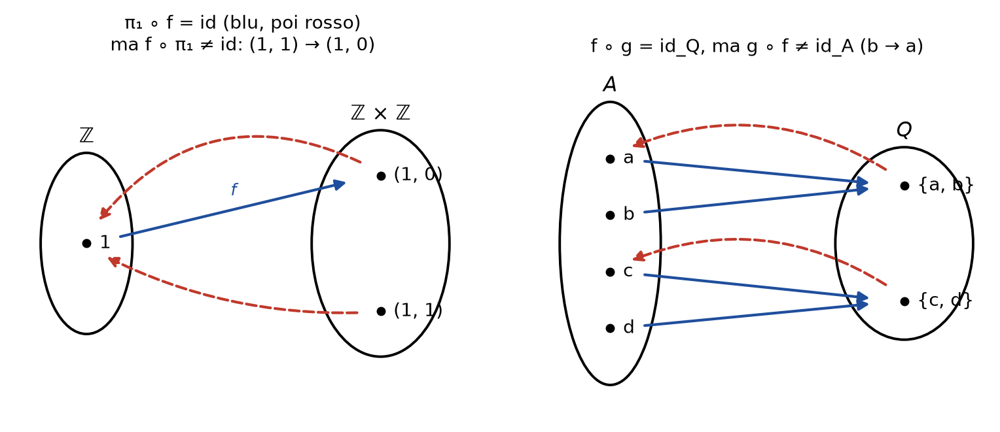
Nei due esempi una composizione è l'identità e l'altra no: nel primo esempio f non è suriettiva, nel secondo f non è iniettiva.
La lezione è pratica: per verificare che due funzioni sono una l'inversa dell'altra bisogna controllare tutte e due le composizioni.
Ogni funzione biettiva è invertibile
Nel capitolo 19 si è visto che una funzione invertibile deve essere biettiva. Ora si dimostra il verso opposto, e si dimostra anche che l'inversa è unica.
Teorema. Sia f : A → B una funzione biettiva. Allora esiste una funzione g : B → A tale che f e g sono una l'inversa dell'altra, e questa g è unica.
Dimostrare l'esistenza vuol dire costruire g, cioè dire quanto vale g(y) per ogni y ∈ B. L'idea è di rovesciare il grafico di f, scambiando il ruolo di dominio e codominio. Non basta però usare una sola delle ipotesi.
Dimostrazione dell'esistenza. Si fissa y ∈ B.
1. Poiché f è suriettiva, esiste x ∈ A con f(x) = y.
2. Per avere una vera funzione bisogna definire g(y) = x, ma x deve essere scelto in modo non ambiguo: con la sola suriettività y potrebbe avere molte controimmagini, e rovesciando il grafico si otterrebbe una situazione vietata per le funzioni, un elemento del dominio con più valori.
3. Qui si usa l'iniettività: poiché f è iniettiva, la controimmagine di y è un solo elemento. Si pone allora g(y) = l'unico x ∈ A tale che f(x) = y.
Ora si controllano le due composizioni.
Sia y ∈ B e sia x = g(y). Per definizione di g, x è proprio un elemento con f(x) = y, quindi (f ∘ g)(y) = f(g(y)) = f(x) = y, e f ∘ g = idB.
Sia x ∈ A e sia y = f(x). L'unico elemento che f manda in y è x, quindi g(y) = x, cioè (g ∘ f)(x) = g(f(x)) = x, e g ∘ f = idA.
Dimostrazione dell'unicità. Supponiamo che g e h siano due funzioni da B in A, entrambe inverse di f: g ∘ f = idA = h ∘ f e f ∘ g = idB = f ∘ h. Si considera la composizione di tre funzioni g ∘ f ∘ h : B → A → B → A, che ha senso perché i domini e i codomini si concatenano, e la si calcola in due modi, sfruttando l'associatività della composizione.
1. Raggruppando le prime due funzioni, (g ∘ f) ∘ h = idA ∘ h = h, perché l'identità è neutra per la composizione.
2. Raggruppando le ultime due, g ∘ (f ∘ h) = g ∘ idB = g, ancora per la neutralità dell'identità.
3. Poiché è la stessa espressione, h = g.
Il trucco di calcolare la stessa espressione in due modi diversi è frequente in matematica e porta quasi sempre a qualcosa di interessante.
Funzione biettiva e funzione invertibile sono la stessa cosa
Mettendo insieme il capitolo 19 e questo teorema, per una funzione essere biettiva ed essere invertibile equivale. L'unica inversa si chiama funzione inversa e si indica con f-1, come nel capitolo 15.
Questo spiega perché nel capitolo 17 conveniva rendere biettiva una funzione prima di invertirla: la funzione x² da ℝ in ℝ non è invertibile, ma ristretta a una funzione da [0, +∞) in [0, +∞) diventa biettiva e la sua inversa è la radice quadrata. Infatti, partendo da un numero non negativo, elevare al quadrato e poi estrarre la radice (o fare il contrario) riporta al numero di partenza: le due composizioni sono l'identità.
Lo stesso accade per l'esponenziale e il logaritmo: l'esponenziale va ristretta nel codominio ai numeri positivi, ed è per questo che il logaritmo è definito solo per i numeri maggiori di zero.
Inversa di una composizione e cancellazione
Proposizione. Se f : A → B e g : B → C sono biettive, anche g ∘ f è biettiva e (g ∘ f)-1 = f-1 ∘ g-1.
Dimostrazione. g ∘ f è iniettiva e suriettiva per la Proposizione 1 del capitolo 19, quindi è biettiva. Per trovare l'inversa si controlla che f-1 ∘ g-1 : C → A funzioni: (f-1 ∘ g-1) ∘ (g ∘ f) = f-1 ∘ (g-1 ∘ g) ∘ f = f-1 ∘ idB ∘ f = f-1 ∘ f = idA, e allo stesso modo (g ∘ f) ∘ (f-1 ∘ g-1) = g ∘ (f ∘ f-1) ∘ g-1 = g ∘ g-1 = idC. Per l'unicità dell'inversa, f-1 ∘ g-1 è proprio (g ∘ f)-1. L'ordine si inverte: per tornare indietro si annulla prima l'ultima operazione.
L'inversa dell'inversa. Poiché f-1 ∘ f = idA e f ∘ f-1 = idB, la funzione f è a sua volta inversa di f-1. Quindi f-1 è biettiva e (f-1)-1 = f.
Cancellazione. Se f è suriettiva e g ∘ f = h ∘ f (con g, h : B → C), allora g = h: per ogni y ∈ B esiste x con f(x) = y, e g(y) = g(f(x)) = h(f(x)) = h(y). Se g è iniettiva e g ∘ f = g ∘ h (con f, h : A → B), allora f = h: per ogni a, da g(f(a)) = g(h(a)) segue f(a) = h(a). Le ipotesi non si possono togliere. Se f non è suriettiva può essere g ∘ f = h ∘ f con g ≠ h: per esempio f : {0} → {0, 1} con f(0) = 0, g l'identità di {0, 1} e h la funzione che manda tutto in 0. Se g non è iniettiva può essere g ∘ f = g ∘ h con f ≠ h: per esempio con g costante, perché g ∘ f e g ∘ h sono allora la stessa funzione costante qualunque siano f e h.
21. Il Principio di Inclusione-Esclusione
Contare gli elementi di un'unione
Il problema è questo: due insiemi finiti A e B, di cui si conosce il numero di elementi, e si vuole contare gli elementi della loro unione. Il primo tentativo è contare separatamente gli elementi di A e quelli di B e sommarli, |A ∪ B| = |A| + |B|, ma questa uguaglianza è in generale falsa. Per capire dove sbaglia basta guardare il contributo di ciascun elemento ai due membri.
Un elemento a che sta solo in A contribuisce 1 a |A ∪ B| e 1 a |A| + |B| (1 da |A| e 0 da |B|). Lo stesso vale per un elemento b che sta solo in B. Un elemento x che sta in entrambi gli insiemi contribuisce 1 a |A ∪ B| perché appartiene all'unione, ma 2 a |A| + |B|, perché viene contato in A e di nuovo in B. L'errore sta tutto negli elementi comuni, contati due volte, e si corregge sottraendo una volta l'intersezione.
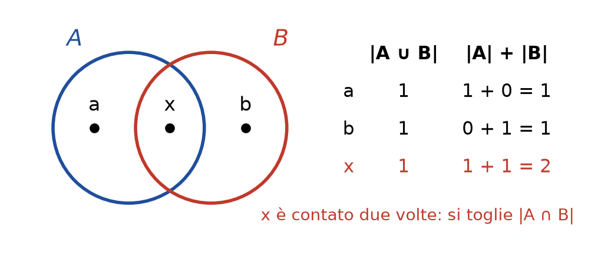
Il contributo di ogni elemento a |A ∪ B| e a |A| + |B|: gli elementi comuni sono contati due volte.
Proposizione (principio di inclusione-esclusione per due insiemi). Se A e B sono insiemi finiti, allora
|A ∪ B| = |A| + |B| − |A ∩ B|,
o, in forma equivalente, |A ∪ B| + |A ∩ B| = |A| + |B|.
La seconda forma mostra bene che la formula lega quattro quantità: note tre qualunque di esse, si ricava la quarta. Se A e B sono disgiunti, cioè A ∩ B = ∅, la formula si riduce a |A ∪ B| = |A| + |B|.
Esempi con due insiemi
Alla fine di una sessione d'esame, 152 matricole hanno superato matematica, 144 hanno superato fisica e 89 hanno superato entrambi gli esami. Se M e F sono gli insiemi di chi ha superato matematica e di chi ha superato fisica, gli studenti che hanno superato almeno un esame sono |M ∪ F| = 152 + 144 − 89 = 207.
Quanti sono i numeri naturali tra 1 e 3000 che non sono divisibili né per 3 né per 5? Sia I₃₀₀₀ = {1, 2, …, 3000} e siano D₃ e D₅ i sottoinsiemi dei numeri divisibili per 3 e per 5. Il problema chiede |I₃₀₀₀| − |D₃ ∪ D₅|, cioè quanti elementi restano togliendo l'unione. Si ha |D₃| = 3000/3 = 1000 e |D₅| = 3000/5 = 600, perché tra ogni k numeri consecutivi ce n'è uno divisibile per k (e qui k divide 3000, quindi il conteggio è esatto). Un numero è divisibile per 3 e per 5 se e solo se è divisibile per 15, quindi D₃ ∩ D₅ = D₁₅ e |D₁₅| = 3000/15 = 200. Allora |D₃ ∪ D₅| = 1000 + 600 − 200 = 1400 e la risposta è 3000 − 1400 = 1600.
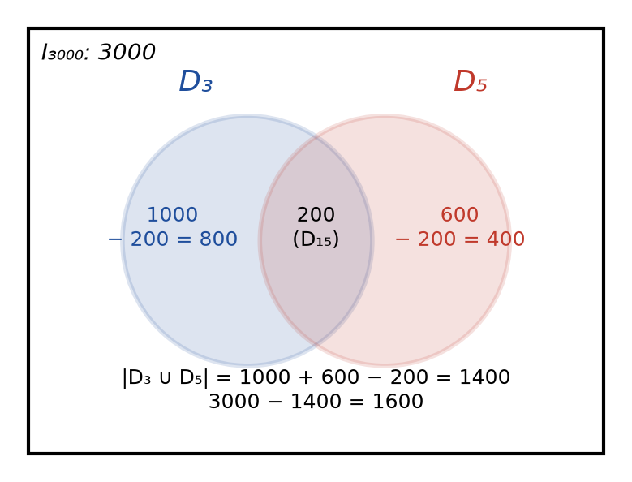
I numeri da 1 a 3000: i divisibili per 3 e per 5 si sovrappongono nei multipli di 15.
Il caso di tre insiemi
Con tre insiemi A, B e C, sommando |A| + |B| + |C| gli elementi comuni a due insiemi sono contati due volte e quelli comuni a tutti e tre tre volte. La formula si ottiene correggendo a passi.
Proposizione (inclusione-esclusione per tre insiemi).
|A ∪ B ∪ C| = |A| + |B| + |C| − |A ∩ B| − |A ∩ C| − |B ∩ C| + |A ∩ B ∩ C|.
Dimostrazione.
1. Si sommano le cardinalità dei tre insiemi, |A| + |B| + |C|.
2. Un elemento comune a due insiemi (per esempio in A ∩ B) è contato due volte, quindi si sottraggono le tre intersezioni a due a due.
3. Un elemento comune a tutti e tre, invece, è contato 3 volte nel primo passo e viene tolto 3 volte nel secondo, perché sta in A ∩ B, in A ∩ C e in B ∩ C: alla fine non è contato per niente. Bisogna quindi aggiungere |A ∩ B ∩ C|, e allora torna a essere contato una volta.
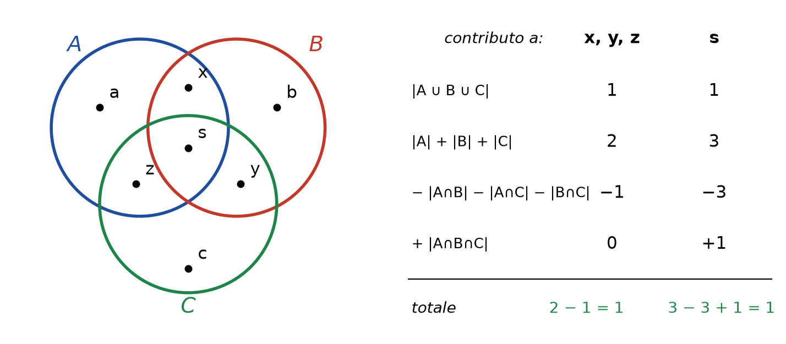
Un elemento del centro del diagramma ha contributo 3 − 3 + 1 = 1 (tabella dei contributi).
Un'altra dimostrazione applica due volte il caso di due insiemi, a (A ∪ B) ∪ C e poi ai singoli addendi.
Esempi con tre insiemi
Un cinema proietta la trilogia di *Matrix* e con un unico biglietto si può vedere un qualunque numero dei tre film. Alla fine della giornata sono stati venduti 129 biglietti. Il primo film ha avuto 109 spettatori, il secondo 76 e il terzo 55; 52 persone hanno visto i primi due film, 44 gli ultimi due e 28 spettatori erano presenti sia al primo sia all'ultimo. Quante persone hanno visto tutti e tre i film? Con Si l'insieme degli spettatori del film i, la formula dà 129 = 109 + 76 + 55 − 52 − 44 − 28 + |S₁ ∩ S₂ ∩ S₃|, da cui |S₁ ∩ S₂ ∩ S₃| = 13.
Quanti numeri da 1 a 660 sono divisibili per almeno uno tra 5, 6 e 11? Con D₅, D₆ e D₁₁ i tre insiemi, si ha |D₅| = 660/5 = 132, |D₆| = 660/6 = 110 e |D₁₁| = 660/11 = 60. Un numero divisibile per 5 e per 6 lo è per 30, perché 5 e 6 non hanno divisori comuni, quindi |D₅ ∩ D₆| = 660/30 = 22; analogamente |D₅ ∩ D₁₁| = 660/55 = 12 e |D₆ ∩ D₁₁| = 660/66 = 10. L'intersezione dei tre è D₃₃₀ e ha 660/330 = 2 elementi. Quindi
|D₅ ∪ D₆ ∪ D₁₁| = 132 + 110 + 60 − 22 − 12 − 10 + 2 = 260.
Più di tre insiemi
La stessa idea funziona con quattro, cinque o più insiemi: si sommano le cardinalità, si tolgono le intersezioni a due a due, si aggiungono quelle a tre a tre, e così via alternando i segni. Il principio resta valido, ma il numero di termini cresce in fretta (con 4 insiemi sono 15, con 5 sono 31) e la formula perde praticità. Esistono semplificazioni in casi particolari, per esempio quando gli insiemi sono a due a due disgiunti: in quel caso |A₁ ∪ … ∪ An| = |A₁| + … + |An|, perché non ci sono ripetizioni da correggere.
22. Il Metodo delle Scelte Successive
Il prodotto cartesiano conta le scelte indipendenti
Nel capitolo 3 si è visto che se |A| = m e |B| = n allora |A × B| = m · n. La ragione si vede elencando gli elementi, A = {a₁, …, am} e B = {b₁, …, bn}: le coppie si dispongono in una griglia rettangolare, con una riga per ogni elemento di A, che contiene tutte le coppie con quel primo elemento, e una colonna per ogni elemento di B. La griglia ha m righe e n colonne, quindi m · n caselle, una per ciascuna coppia.
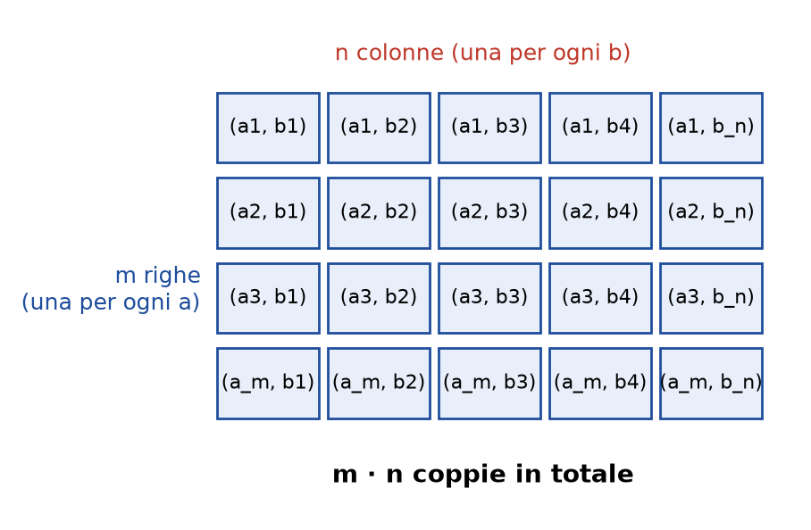
Le coppie di A × B in una griglia con m righe e n colonne: in tutto m · n.
Il prodotto cartesiano modella una situazione in cui si fa una scelta arbitraria in un insieme e un'altra scelta, indipendente, in un secondo insieme. La stessa idea vale con tre, quattro o più insiemi.
Proposizione. Se A₁, A₂, …, Ak sono insiemi finiti con |Ai| = ni, allora |A₁ × A₂ × … × Ak| = n₁ · n₂ · … · nk.
Si dimostra per induzione su k: il caso k = 2 è quello già noto, e per k > 2 gli insiemi (A₁ × … × Ak−1) × Ak e A₁ × … × Ak−1 × Ak si corrispondono uno a uno (una biiezione ovvia riordina le parentesi), quindi |A₁ × … × Ak| = |A₁ × … × Ak−1| · |Ak| = (n₁ · … · nk−1) · nk.
Un esempio: il menù
Un ristorante offre un menù composto da un panino, una bibita e un dolce. Qualunque panino, qualunque bibita e qualunque dolce si scelga, si ottiene un menù valido. Se ci sono 12 panini, 5 bibite e 4 dolci, ogni menù è una terna ordinata (panino, bibita, dolce), cioè un elemento del prodotto cartesiano P × B × D dei tre insiemi. Il numero di menù possibili è quindi
|P| · |B| · |D| = 12 · 5 · 4 = 240.
Questo vuol dire che si può andare al ristorante per 240 giorni di seguito senza mai ripetere lo stesso menù.
L'albero delle scelte
Lo stesso risultato si può vedere con un albero. Si parte dalla radice e si disegna un ramo per ogni possibile prima scelta (12 panini); dalla fine di ciascun ramo partono altri 5 rami, uno per ogni bibita; dalla fine di questi partono 4 rami, uno per ogni dolce. I punti finali dell'albero rappresentano tutte le possibili scelte complete, e il loro numero è il prodotto 12 · 5 · 4.
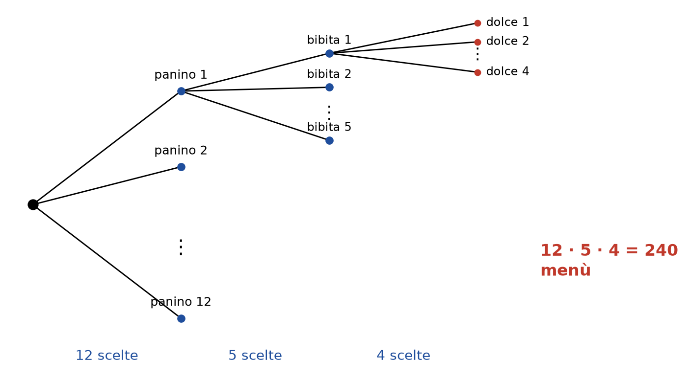
L'albero delle scelte per il menù: a ogni livello le scelte sono nello stesso insieme.
Il metodo delle scelte successive si può così enunciare: se una situazione si ottiene con una successione di k scelte indipendenti, e per la prima ci sono n₁ possibilità, per la seconda n₂, per la terza n₃ e così via, il numero totale di situazioni è n = n₁ · n₂ · … · nk.
C'è una differenza importante con il prodotto cartesiano. Nel caso del menù le scelte avvengono sempre negli stessi insiemi, quali che siano le scelte precedenti. In generale invece l'insieme in cui si sceglie a un certo passo può dipendere dalle scelte fatte prima: se, per esempio, scegliendo un certo panino cambiano le bibite disponibili, le bibite tra cui scegliere sono diverse, ma è sufficiente che il loro numero sia sempre lo stesso a quel livello perché la formula continui a valere. Si vedrà tra poco un caso del genere con gli ordinamenti.
Altri esempi
Le targhe. Se una targa è formata da 3 lettere dell'alfabeto inglese (26 lettere) seguite da 4 cifre, con ripetizioni ammesse, i modi sono 26 · 26 · 26 · 10 · 10 · 10 · 10 = 175 760 000.
I PIN. Un PIN di 4 cifre ha 10 · 10 · 10 · 10 = 10⁴ = 10 000 possibilità. Se si hanno 10 001 smartphone, per il principio delle gabbie dei piccioni almeno due devono avere lo stesso PIN.
Le funzioni da A in B. Se |A| = m e |B| = n, per definire una funzione f : A → B bisogna dire quanto vale f(a) per ognuno degli m elementi di A, e ogni valore si può scegliere tra gli n elementi di B, senza vincoli sugli altri. Quindi le funzioni da A in B sono n · n · … · n = nm.
23. Ordinamenti, Fattoriale e Anagrammi
Ordinare un insieme
Dato un insieme finito A con n elementi, ci si chiede in quanti modi diversi se ne possono ordinare gli elementi, cioè metterli in fila: pensate a un mazzo di carte da riordinare o a un gruppo di libri da sistemare in uno scaffale. Un insieme non ha un ordine naturale, ma quando serve lo si può scegliere, e i modi sono molti.
Ordinare significa dire quale elemento è il primo, quale il secondo, e così via. Chiamiamo In = {1, 2, …, n} l'insieme dei primi n numeri naturali: scegliere un ordinamento vuol dire associare un elemento di A a ciascun numero 1, 2, …, n, in modo che ogni elemento di A compaia una e una sola volta. Un ordinamento di A è dunque una funzione biettiva In → A, e contare gli ordinamenti equivale a contare le funzioni biettive.
In parole povere: ordinare un insieme di n elementi vuol dire metterli in fila, assegnando il posto 1, il posto 2, fino al posto n, in modo che ogni elemento occupi esattamente un posto e ogni posto abbia esattamente un elemento. Come disporre n libri su uno scaffale senza lasciare buchi.
L'albero e il numero degli ordinamenti
Si costruisce la funzione scegliendo un elemento alla volta. Per la posizione 1 ci sono n scelte, perché si può scegliere qualunque elemento di A. Per la posizione 2 ce ne sono n − 1: l'elemento già scelto non si può usare di nuovo, altrimenti la funzione non sarebbe iniettiva. Per la posizione 3 ne restano n − 2, e così via, finché alla penultima posizione restano 2 scelte e all'ultima una sola: l'unico elemento non ancora scelto.
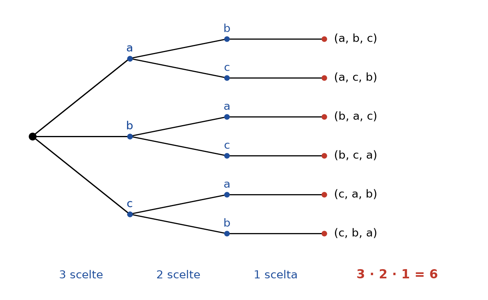
L'albero degli ordinamenti di {a, b, c}: 3 scelte, poi 2, poi 1, in tutto 6.
Qui le scelte possibili al secondo livello dipendono da dove ci si trova al primo (se si è scelto a, si sceglie tra b e c; se si è scelto b, tra a e c), ma il loro numero è lo stesso, e per questo basta moltiplicare. Con n = 3 si hanno 3 · 2 · 1 = 6 ordinamenti, che si possono scrivere tutti: (a, b, c), (a, c, b), (b, a, c), (b, c, a), (c, a, b), (c, b, a).
Il numero totale di ordinamenti è il prodotto n · (n − 1) · (n − 2) · … · 3 · 2 · 1. Questo numero si chiama n fattoriale e si scrive n!.
Definizione. Per n ∈ ℕ si pone 0! = 1 e n! = 1 · 2 · 3 · … · n per n ≥ 1.
In parole povere: il fattoriale di n è il prodotto di tutti i numeri da 1 a n, e dice in quanti modi si possono mettere in fila n cose diverse. Esempio: 4! = 4·3·2·1 = 24 modi di sedere quattro amici su quattro sedie. Per convenzione 0! vale 1: esiste un solo modo di ordinare niente.
Proposizione. Se A è un insieme finito con n elementi, gli ordinamenti di A sono n!.
Qualche valore: 1! = 1, 2! = 2, 3! = 6, 4! = 24, 5! = 120, 6! = 720, 7! = 5040, 8! = 40 320. Il fattoriale cresce molto in fretta: le 8 persone che partecipano alla finale dei 100 metri possono arrivare in 8! = 40 320 ordini diversi, e i modi di riordinare un mazzo di 52 carte sono 52!, un numero enorme.
Due osservazioni sulla definizione. Primo, 0! = 1 è una convenzione: il prodotto 1 · 2 · … · n non ha senso per n = 0, e si pone 0! = 1 perché così certe formule si scrivono senza dover trattare a parte il caso 0. Secondo, vale n! = n · (n − 1)! per ogni n ≥ 1, perché i fattori da n − 1 in giù formano esattamente (n − 1)!. È una definizione ricorsiva del fattoriale, come si userebbe in un linguaggio di programmazione che permette le funzioni ricorsive.
Gli anagrammi
Un caso particolare di riordinamento è l'anagramma. Si parte da un insieme di simboli A, che chiamiamo alfabeto (le lettere dalla A alla Z, ma anche cifre e simboli speciali: in una password l'alfabeto è l'insieme di tutti i caratteri ammessi). Una parola è una successione finita di simboli di A, come TUZAAB, che non deve avere alcun senso compiuto. Fissare una parola di lunghezza ℓ vuol dire fissare una funzione P : Iℓ → A, che dice quale lettera sta al primo posto, al secondo e così via.
In parole povere: l'alfabeto è l'insieme dei simboli che puoi usare (lettere, cifre, segni) e una parola è una qualunque sequenza di questi simboli, anche senza senso. La lunghezza è semplicemente quanti simboli ci sono, contando la posizione di ciascuno. Esempio: TUZAAB è una parola di lunghezza 6.
In generale questa funzione non è biettiva: non è detto che compaiano tutte le lettere dell'alfabeto, e una lettera può comparire più volte. Un anagramma di P è un rimescolamento delle lettere della parola, cioè una parola ottenuta riordinando le stesse lettere, con le ripetizioni incluse (la parola stessa conta come uno dei suoi anagrammi).
In parole povere: un anagramma è un'altra parola formata con esattamente le stesse lettere, rimescolate, con lo stesso numero di copie di ciascuna. Se una lettera compare due volte, nell'anagramma deve comparire due volte. Esempio: da ORO si ottengono ORO, OOR e ROO.
Se la parola ha tutte lettere diverse, riordinarla significa riordinare l'insieme delle sue lettere, e gli anagrammi sono ℓ!. Gli anagrammi di AGO sono 3! = 6: AGO, AOG, GAO, GOA, OAG, OGA. LUNA, con 4 lettere diverse, ha 4! = 24 anagrammi; PORTA ne ha 5! = 120.
Il problema nasce quando alcune lettere si ripetono. La parola ORO non ha 3! = 6 anagrammi, ma solo 3: ORO, OOR, ROO. Rimescolare le due O fra loro, infatti, formalmente è un riordinamento, ma la parola resta la stessa e non conta come anagramma nuovo.
Il ragionamento generale è il seguente: si parte dai ℓ! riordinamenti possibili e, per ogni lettera ripetuta, si divide per il numero di modi in cui si possono scambiare tra loro le sue copie, che non cambiano la parola.
Proposizione. Sia P una parola di lunghezza ℓ in cui k simboli compaiono più volte, il j-esimo simbolo compare rj volte. Allora il numero degli anagrammi di P è
ℓ! / (r₁! · r₂! · … · rk!).
Per ogni simbolo che si ripete r volte, i riordinamenti delle sue r copie sono r!, e tutti producono la stessa parola: bisogna quindi dividere per r!, e così per ogni simbolo ripetuto.
Esempi.
ORO: ℓ = 3, la O compare 2 volte, quindi 3!/2! = 6/2 = 3.
POZZO: ℓ = 5, la O e la Z compaiono due volte ciascuna, quindi 5!/(2! · 2!) = 120/4 = 30.
MATEMATICA: ℓ = 10; la M compare 2 volte, la T 2 volte, la A 3 volte, mentre E, I e C compaiono una sola volta (e non contano nel prodotto, perché 1! = 1). Gli anagrammi sono 10!/(2! · 2! · 3!) = 3 628 800/24 = 151 200. Il numero importa poco, conta il metodo.
24. Le Disposizioni: con Ripetizione e Semplici
Scelte ordinate di alcuni elementi
Con gli ordinamenti si prendono tutti gli elementi di un insieme e li si mette in fila. Nella realtà spesso interessa scegliere solo alcuni elementi, sempre tenendo conto dell'ordine. Alle Olimpiadi, per esempio, vengono premiati i primi tre: nella finale dei 100 metri con 8 atleti si vuole sapere quante sono le possibili assegnazioni di oro, argento e bronzo, quindi si ordinano solo tre degli otto, mentre gli altri possono arrivare in qualunque ordine e non interessano. Un altro problema: un falegname ha prodotto 5 oggetti diversi e dispone di smalti di 4 colori, e vuole sapere in quanti modi può colorare gli oggetti.
Entrambe le situazioni sono disposizioni. Una disposizione di elementi di un insieme A è una scelta ordinata di elementi di A: l'ordine conta, perché il primo scelto e il secondo scelto hanno ruoli diversi (arrivare primo e secondo non è la stessa cosa che arrivare secondo e primo; e nei colori, colorare l'oggetto a di bianco e l'oggetto b di rosso è diverso dal contrario).
In parole povere: una disposizione è scegliere alcuni elementi uno dopo l'altro tenendo conto dell'ordine, cioè chi viene scelto per primo è diverso da chi viene scelto per secondo. Come il podio di una gara: Anna prima e Marco secondo è un risultato diverso da Marco primo e Anna seconda.
I due problemi però non sono uguali, e vanno trattati con formule diverse. Un atleta non può vincere due medaglie nella stessa gara, quindi non ci sono ripetizioni nella scelta. Invece il falegname può colorare tutti e cinque gli oggetti di bianco, e la scelta del colore può ripetersi. Per questo si distinguono le disposizioni con ripetizione, in cui lo stesso elemento si può scegliere più volte, e le disposizioni semplici, in cui no.
Come sottolineato a lezione, la parte più difficile è leggere il problema e capire di che tipo è; le formule sono semplici. I due indizi principali sono: se le scelte possono ripetersi oppure no, e se l'ordine conta oppure no.
Disposizioni con ripetizione
Sia A un insieme con n elementi (nel problema dei colori, l'insieme dei 4 smalti) e si devono fare k scelte ordinate in A. Una disposizione con ripetizione di ordine k in A è quindi una successione di k elementi di A non necessariamente distinti. In termini di funzioni, si tratta di assegnare a ciascuno dei numeri 1, 2, …, k un elemento di A: una funzione qualunque da Ik = {1, …, k} in A, perché non c'è alcuna condizione (si può scegliere sempre lo stesso elemento).
In parole povere: una disposizione con ripetizione è una sequenza di k scelte in cui lo stesso elemento può essere scelto più volte. Come un codice a 4 cifre: puoi usare più volte la stessa cifra, come 7-7-3-7.
Nell'albero, alla prima scelta ci sono n possibilità; alla seconda ce ne sono di nuovo n, perché l'elemento già scelto si può scegliere ancora; e così a ogni livello. Con n = 4 il primo livello ha 4 rami, il secondo 4 · 4 = 16, il terzo 4 · 4 · 4 = 64, e al livello k ci sono 4k punti finali.
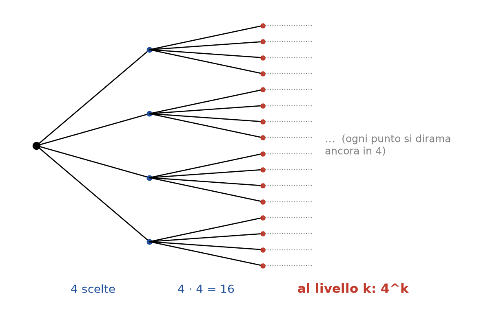
L'albero delle disposizioni con ripetizione per n = 4: a ogni livello 4 scelte, quindi 4, 16, 64, …
Proposizione. Il numero delle disposizioni con ripetizione di k scelte tra n oggetti è nk.
Si indica con Drn,k, dove la r sta per «ripetizione» (non è un esponente), e vale Drn,k = nk. Per il falegname, con n = 4 colori e k = 5 oggetti, ci sono 4⁵ = 1024 colorazioni. Altri esempi: la prova scritta di 15 candidati con voti da 0 a 10 ha 11 voti possibili per candidato, quindi 1115 esiti complessivi; 7 oggetti con 4 smalti si possono colorare in 4⁷ modi.
Un chiarimento sul modello: le scelte si fanno nell'insieme dei colori, a ogni oggetto si associa un colore, ma non a ogni colore un oggetto (lo stesso colore può servire a più oggetti). Per questo la scelta è una funzione dall'insieme degli oggetti, numerati da 1 a k, nell'insieme dei colori, non il contrario. La numerazione ha senso perché gli oggetti sono diversi tra loro, quindi distinguibili: se invece fossero 5 sedie identiche, scegliere bianco per la prima e rosso per la seconda sarebbe la stessa cosa che il contrario, l'ordine non conterebbe più e il problema sarebbe un altro.
Disposizioni semplici
Una disposizione semplice di ordine k in A è una successione di k elementi di A a due a due distinti, cioè una scelta ordinata senza ripetizioni. Equivale a una funzione iniettiva da Ik in A, perché due numeri diversi non possono avere lo stesso elemento.
In parole povere: una disposizione semplice è una sequenza di k scelte in cui ogni elemento si può usare una volta sola, quindi tutti gli elementi scelti sono diversi tra loro. Come estrarre tre palline numerate da un'urna senza rimetterle dentro, annotando l'ordine di uscita.
Una conseguenza immediata: per il principio dei cassetti (o delle gabbie dei piccioni) non si possono associare in modo iniettivo più elementi di quanti ce ne siano nell'insieme di arrivo, quindi deve essere k ≤ n. Con k > n non esistono disposizioni semplici. Con k = n la disposizione semplice è un ordinamento di tutto A, e il numero è n!. Se k < n la funzione non è suriettiva (si usano solo alcuni elementi di A), ma questo non è richiesto.
Il conteggio procede come per gli ordinamenti, ma ci si ferma prima. Alla prima scelta ci sono n possibilità, alla seconda n − 1 (non si può ripetere l'elemento già scelto), alla terza n − 2, e così via. All'ultima scelta, la k-esima, ci sono n − (k − 1) = n − k + 1 possibilità: i fattori sono k in tutto e il primo non toglie niente, il secondo toglie 1, il terzo toglie 2, il k-esimo toglie k − 1.
L'albero delle disposizioni semplici per n = 5 e k = 3: 5 scelte, poi 4, poi 3, in tutto 60.
Proposizione. Per 1 ≤ k ≤ n, il numero delle disposizioni semplici di k elementi scelti tra n, indicato con Dn,k, è
Dn,k = n · (n − 1) · … · (n − k + 1).
Nell'albero con n = 5 e k = 3 si hanno 5 · 4 · 3 = 60 punti finali. Per la finale dei 100 metri con 8 atleti i podi possibili sono D8,3 = 8 · 7 · 6 = 336, e con 12 atleti D12,3 = 12 · 11 · 10 = 1320.
Esiste una scrittura più compatta con il fattoriale. Scrivendo n! = n · (n − 1) · … · (n − k + 1) · (n − k) · (n − k − 1) · … · 3 · 2 · 1, i fattori dopo (n − k + 1) formano (n − k)!. Quindi, dividendo n! per (n − k)!, restano solo i primi k fattori:
Dn,k = n! / (n − k)!.
Con k = n si ottiene n!/0! = n!, coerente con gli ordinamenti, ed è qui che la convenzione 0! = 1 è utile.
Verso le combinazioni
Non sempre l'ordine conta. In una gelateria con 15 gusti, un cono grande contiene tre gusti: cioccolato, nocciola, pistacchio è lo stesso cono di pistacchio, cioccolato, nocciola. Sono scelte non ordinate, e il modello matematico non è una funzione ma un sottoinsieme: scegliere un cono equivale a scegliere un sottoinsieme di 3 gusti dai 15. Anche una vaschetta di pasticcini non dipende dall'ordine in cui li si mettono, ma lì lo stesso tipo di pasticcino si può prendere più volte: è un caso con ripetizione, che si tratterà a parte. Una combinazione di ordine k in un insieme A con n elementi è la scelta di un sottoinsieme S di A con k elementi, con k ≤ n. Quante siano si vedrà nella prossima lezione, insieme ai coefficienti binomiali.
25. Insiemi Finiti, Cardinalità e Principio dei Cassetti
Contare gli elementi di un insieme
Contare gli elementi di un insieme A significa, intuitivamente, dare l'etichetta «1» a un elemento, «2» a un altro, e così via fino a esaurirli: nel linguaggio degli insiemi è una funzione iniettiva α : A → ℕ. Per questo approccio ci sono due problemi. Il risultato finale potrebbe dipendere da come si conta, cioè dalla funzione α scelta, e non è detto che una tale funzione esista. La definizione corretta parte da un criterio che dice quando due insiemi hanno lo stesso numero di elementi, senza contarli.
Definizione. Due insiemi A e B si dicono equipollenti se esiste una funzione biettiva f : A → B. In questo caso si dice che hanno la stessa cardinalità e si scrive |A| = |B|.
In parole povere: due insiemi sono equipollenti se si possono accoppiare perfettamente, uno a uno, senza avanzi da nessuna parte; in tal caso si dice che hanno lo stesso numero di elementi, anche senza contarli. Come in una sala da ballo: se tutti ballano in coppia e nessuno resta fuori, i ballerini e le ballerine sono in numero uguale.
Poiché la composizione di biiezioni è una biiezione, se |A| = |B| e |B| = |C| allora |A| = |C|. La definizione può però dare risultati controintuitivi quando gli insiemi sono infiniti:
la funzione f : ℕ → 2ℕ, f(n) = 2n, è una biiezione (ha come inversa g(m) = m/2), quindi ℕ e 2ℕ, l'insieme dei numeri pari, sono equipollenti, anche se i pari sono solo una parte dei naturali;
anche ℕ × ℕ è equipollente a ℕ: si elencano le coppie (a, b) in ordine crescente di a + b e, a parità di somma, per a crescente, cioè (0, 0), (0, 1), (1, 0), (0, 2), (1, 1), (2, 0), … ; ogni coppia compare in questa lista, e il posto occupato nella lista è una biiezione con ℕ.
Le coppie di ℕ × ℕ elencate lungo le diagonali a + b = costante: il numero nella casella è il posto nella lista.
Definizione. Si scrive |A| ≤ |B| se esiste una funzione iniettiva A → B. In modo equivalente (per A non vuoto), se esiste una funzione suriettiva B → A. Per esempio, se A ⊆ B l'inclusione è una funzione iniettiva e quindi |A| ≤ |B|; e per ogni insieme X la funzione x ↦ {x} da X in P(X) è iniettiva, quindi |X| ≤ |P(X)|.
In parole povere: dire che A ha al massimo tanti elementi quanti B significa poter assegnare a ogni elemento di A un elemento diverso di B, senza che due di A finiscano sullo stesso. In altre parole, B ha posti sufficienti per ospitare tutti quelli di A, uno ciascuno.
Si accettano senza dimostrazione due fatti, intuitivamente chiari: tra due insiemi A e B vale sempre |A| ≤ |B| oppure |B| ≤ |A|; e se |A| ≤ |B| e |B| ≤ |A| allora |A| = |B| (teorema di Schröder-Bernstein).
Insiemi finiti e infiniti
Definizione. Un insieme A si dice infinito se è equipollente a un suo sottoinsieme proprio, cioè se esiste una funzione f : A → A iniettiva ma non suriettiva. Un insieme si dice finito se non è infinito, cioè se ogni funzione iniettiva f : A → A è anche suriettiva.
In parole povere: un insieme è infinito se riesce a «stare dentro» una sua parte più piccola, cioè esiste una funzione che lo schiaccia in una sua parte lasciando fuori qualcosa e senza mai far collassare due elementi insieme. Per i numeri naturali basta «n diventa n + 1»: lo 0 resta fuori. Un insieme è finito se questo trucco non è possibile: ogni funzione che non fonde due elementi li copre tutti.
Per gli insiemi finiti la casistica delle funzioni da A in A è molto semplice.
Proposizione. Sia A un insieme finito e sia f : A → A una funzione. Le seguenti affermazioni sono equivalenti: f è iniettiva; f è suriettiva; f è biettiva.
Dimostrazione. Se f è iniettiva, è anche suriettiva per la definizione di insieme finito, quindi biettiva. Se f è suriettiva, ogni elemento a ha almeno una controimmagine, e si può definire una funzione g : A → A scegliendo per ogni a un elemento di f-1(a). Poiché le controimmagini di elementi diversi sono disgiunte, g è iniettiva, quindi (per quanto appena visto) biettiva, e in particolare suriettiva: questo vuol dire che ogni controimmagine è fatta da un solo elemento: se f-1(a) avesse due elementi x e x', uno solo sarebbe g(a), e l'altro non sarebbe valore di g su nessun elemento (le controimmagini sono disgiunte), contro la suriettività di g. Quindi f è iniettiva. Infine, se f è biettiva è sia iniettiva sia suriettiva.
Con ℕ non succede: f(n) = n + 1 è iniettiva ma non suriettiva (0 non è immagine di niente), e questo conferma che ℕ è infinito.
Gli insiemi In e il numero di elementi
Per n ≥ 1 si pone In = {1, 2, …, n}: sono i prototipi degli insiemi finiti. Insieme all'insieme vuoto (che ha 0 elementi) esauriscono tutte le cardinalità finite, nel senso del seguente teorema.
Teorema.
Per ogni n ≥ 1 l'insieme In è finito.
Se m ≠ n, gli insiemi Im e In non sono equipollenti.
Se m ≤ n allora |Im| ≤ |In|.
Ogni insieme finito non vuoto è equipollente a un In.
Per ogni insieme infinito X si ha |ℕ| ≤ |X|.
La dimostrazione del libro usa l'induzione su n, un ragionamento per assurdo e una costruzione di sottoinsiemi decrescenti A ⊃ A₁ ⊃ A₂ ⊃ …: non serve ripeterla qui. La conseguenza importante è che per un insieme finito A esiste un unico n tale che A e In sono equipollenti, e si pone |A| = n: è il numero di elementi di A. In pratica contare gli elementi di A vuol dire costruire una biiezione tra In e A, come si è fatto per gli ordinamenti nel capitolo 23.
Questo permette di estendere la proposizione precedente a funzioni tra due insiemi diversi ma con lo stesso numero di elementi: se A e B hanno lo stesso numero di elementi, una funzione f : A → B è iniettiva se e solo se è suriettiva se e solo se è biettiva. Basta comporre con due biiezioni φA : In → A e φB : In → B e applicare la proposizione a φB-1 ∘ f ∘ φA.
Il principio dei cassetti
Una conseguenza molto utile, che nei capitoli 22 e 24 è già stata usata, riguarda due insiemi finiti A e B con |A| > |B|: non possono esistere funzioni iniettive A → B. Il fatto è noto come principio dei cassetti o delle gabbie dei piccioni, e si enuncia così:
se ci sono più piccioni che gabbie, almeno una gabbia contiene più di un piccione.
Infatti, se P è l'insieme dei piccioni e G quello delle gabbie, assegnare a ogni piccione una gabbia è una funzione f : P → G. Per ogni gabbia g i piccioni che stanno nella gabbia g sono la controimmagine f-1(g). Poiché i piccioni sono più delle gabbie, f non può essere iniettiva, e questo vuol dire che c'è una gabbia la cui controimmagine ha più di un elemento.
Il principio serve in casi concreti per arrivare a conclusioni altrimenti difficili da verificare. Su un corpo umano crescono circa 5 milioni di peli; ne segue che in una metropoli con ben più di 5 milioni di abitanti, anche escludendo chi è del tutto glabro, ci sono almeno due persone con lo stesso numero esatto di peli. Un altro esempio: un PIN di 4 cifre ha 10 000 possibilità, quindi tra 10 001 smartphone almeno due hanno lo stesso PIN.
Insiemi numerabili
Definizione. Un insieme X si dice numerabile se è equipollente a ℕ. In concreto, X è numerabile se si possono elencare tutti i suoi elementi in una successione, X = {a₁, a₂, a₃, …}. Per esempio ℤ è numerabile, perché la lista 0, 1, −1, 2, −2, 3, −3, … include tutti i numeri interi (l'ordine in cui si alternano positivi e negativi non ha importanza). Anche ℚ è numerabile: si elencano i razionali non negativi come frazioni a/b, con b ≥ 1, secondo l'ordine di grandezza di a + b (con le frazioni non ridotte che si scartano o si ripetono), come si è fatto per ℕ × ℕ, e poi si intervallano i razionali negativi seguendo l'esempio di ℤ.
In parole povere: un insieme è numerabile se si può elencare in una lista infinita, primo, secondo, terzo, e così via, senza dimenticare nessuno. Cioè ha «tanti elementi quanti i numeri naturali». Esempio: gli interi si elencano come 0, 1, −1, 2, −2, 3, ...
Intorno al 1880 Cantor dimostrò che esistono insiemi infiniti non numerabili, che ℝ non è numerabile e che per ogni insieme X l'insieme delle parti P(X) ha cardinalità strettamente maggiore di |X|. Qui ci si limita a ricordare questi fatti, rimandando ai testi specialistici per le tecniche di dimostrazione.
Con questo si chiude la parte sul conteggio: gli insiemi finiti e il principio dei cassetti sono alla base dei metodi dei capitoli 21-24, e il capitolo seguente (le combinazioni) riprenderà le scelte non ordinate.